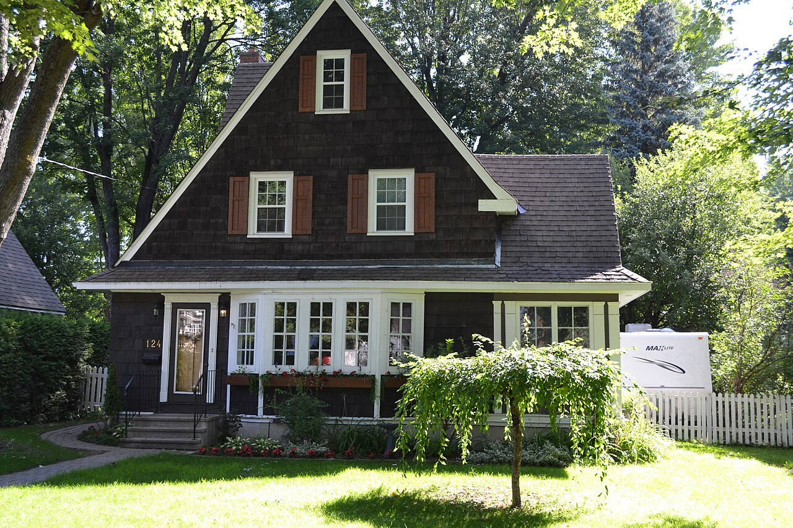

1800–1850 · Wright's Town and the founding of Aylmer
1800 – 1850Philemon Wright's party reaches the Chaudière in 1800 and the first raft of squared timber leaves for Québec in 1806. Charles Symmes manages the Deschênes farm from 1821, buys and subdivides it in 1828, and the first Aylmer houses go up about 1830 — the auberge Charles-Symmes of 1831 among them. The district court moves to Aylmer in 1842 and the palais de justice follows in 1852. What survives from this half-century is a thin layer: L-plan and gable-roofed houses in the Québec tradition, and the stone and clapboard of Aylmer's Regency-era main street.
1800–1850 · 1800 – 1850 · Ville de Gatineau
Phase attribution: verified
Photograph pendingEnclume. 2023. 9, chemin Donaldson — Ville de Gatineau. Not reproduced: the City's conditions of use prohibit republication to third parties.
Two wings meeting at a right angle under straight gable roofs of medium to steep pitch, with a covered gallery set into the crook of the L and running along one or two façades on worked columns. Walls are wood clapboard or rabbeted board, sometimes red Modular brick. Some of these houses carry two entrance doors, one to each volume.
Where it comes fromThe L-plan house with a two-slope roof appears toward the end of the 19th century, when industrialisation made possible the mass production of standardised building materials, many of them in wood. Architectural and ornamental wood elements such as doors and windows were also available by catalogue, which gave the chance to personalise different types of houses, and the plans of these houses — the L-plan among them — were themselves available by catalogue. The period corresponds to a major development of North American cities, where demand for housing intensified because of the rural exodus. Though present in urban settings, the L-plan house also spread in rural areas in the context of settlement of the territory: the perpendicular arrangement of the two building volumes gives a spacious volume, less compact than a rectangular or cubic plan, allows a gallery to be inserted in the crook of the L (particularly observable in rural settings), and creates numerous exterior walls that permit windows offering different views.
What Ville de Gatineau says about this type ›
Historical context (fiche)
- La maison avec plan en L à toit à deux versants fait son apparition vers la fin du 19e siècle, au moment où l’industrialisation permet la production en série de matériaux de construction standardisés, dont plusieurs en bois. Des éléments architecturaux et ornementaux en bois, tels que les portes et fenêtres, sont également disponibles par catalogue, ce qui donne l'occasion de personnaliser différents types de maisons. Les plans de ces maisons, dont la maison avec plan en L, sont eux-mêmes disponibles par catalogues. Cette époque correspond ainsi à un important développement des villes nord-américaines, où la demande en logements s’intensifie en raison de l’exode rural.
- Bien que présente en milieu urbain, la maison avec plan en L se répand également en milieu rural dans le contexte de la colonisation du territoire. La disposition perpendiculaire des deux corps de bâtiment permet un volume spacieux et moins compact qu’un plan rectangulaire ou cubique. Il permet également d’insérer une galerie dans le creux du L, une caractéristique particulièrement observable en milieu rural. De plus, les nombreux murs extérieurs engendrés par cette volumétrie permettent l’insertion de fenêtres offrant différentes vues.
Siting & landscape
- Présence marquée dans les secteurs de Buckingham et d’Aylmer et, dans une moindre mesure, dans les secteurs de Gatineau (secteur rural), de Masson-Angers et de Hull.
Massing
- Roof of two straight slopes with a medium to steep pitch.
- Roof of two mansarded slopes (rare).
- One and a half storeys, two storeys or two and a half storeys.
- The half-storey is located under the attic.
- L-shaped plan made up of two building volumes set perpendicular to one another.
- Covered gallery on one or two façades (frequent).
- The gallery is, with or without a balustrade, carried by worked columns (frequent) of square, round or turned form whose dimensions vary between 3 ½ and 10 ½ inches in width. A pediment punctuates the gallery roof at the entrance (occasional).
- Toiture à deux versants droits avec pente moyenne à forte.
- Toiture à deux versants mansardés (rare).
- Un étage et demi, deux étages ou deux étages et demi.
- Le demi-étage se situe sous les combles.
- Plan en L composé de deux corps de bâtiment disposés perpendiculairement.
- Galerie couverte sur une ou deux façades (fréquent).
- La galerie est avec ou sans balustrade soutenue par des colonnes ouvragées (fréquent) de forme carrée, ronde ou tournée dont les dimensions varient entre 3 ½ et 10 ½ pouces de largeur. Un fronton vient ponctuer le toit de la galerie au niveau de l’entrée (occasionnel).
Articulation
- Return of the eaves (occasional).
- Corner boards (frequent) on wood-clad houses.
- Wood casings around the windows (frequent) on wood-clad houses.
- Soldier-course bricks or arched brick lintels above the openings (frequent).
- Brackets (occasional) and lambrequins (rare) on the projections.
- Play of relief with the brick on the façade (rare).
- Retour de l’avant-toit (occasionnel).
- Planches cornières (fréquent) sur les maisons revêtues de bois.
- Chambranles de bois autour des fenêtres (fréquent) sur les maisons revêtues de bois.
- Briques en soldat ou linteaux arqués en brique au-dessus des ouvertures (fréquent).
- Aisseliers (occasionnel) et lambrequins (rare) sur les saillies.
- Jeu de relief avec la brique en façade (rare).
Openings
- Simple main door, with a transom above the door (occasional).
- Presence of two entrance doors (occasional), in each of the main volumes.
- The typical windows are vertical, sash (guillotine) type (frequent) with 4 panes (occasional), 6 panes (rare), 9 panes (occasional), or 12 panes (rare).
- Shed dormers, dormers with hanging windows (occasional) or gabled dormers (rare).
- Window high in the gable (occasional).
- Porte principale simple, avec une imposte au-dessus de la porte (occasionnel).
- Présence de deux portes d’entrée (occasionnel), dans chacun des corps principaux.
- Les fenêtres types sont verticales, à guillotine (fréquent) avec 4 carreaux (occasionnel), 6 carreaux (rare), 9 carreaux (occasionnel), ou 12 carreaux (rare).
- Lucarnes rampantes, lucarnes à fenêtres pendantes (occasionnelle) ou lucarnes à pignons (rare).
- Fenêtre dans le haut du pignon (occasionnel).
Materials
- Exterior cladding of wood clapboard or rabbeted boards (frequent).
- Exterior cladding of red clay brick in Modular format (8" × 2 ½" × 3 ½"), with a stretcher bond (occasional).
- Revêtement extérieur en clins de bois ou en planches à feuillure (fréquent).
- Revêtement extérieur en briques d’argile rouge de format Modular (8" × 2 ½" × 3 ½"), avec un appareillage en panneresse (occasionnel).
Encoded from the City's 2023 fiche for this type. The five columns follow the fiche's own sections — répartition géographique → siting, volumétrie → massing, ornementation → articulation, ouvertures → openings, revêtement → materials — and the French beneath each English list is the fiche's wording. The fiche's « Période de construction principale » is a bar graphic with no recoverable dates, so no construction period is encoded; the phase is taken from the historical context section instead.
Conservation guidance (fiche)- Prefer: Additions should be made at the rear of the building and remain little visible from the street. In the case of a contemporary addition at the rear, the new volume could take inspiration from the size and forms of the original extensions or secondary volumes.
- Prefer: Maintain and keep the original components of the projections and galleries as well as the massing.
- Prefer: When replacement of the original components is unavoidable, favour materials or a massing whose appearance recalls the original. A contemporary interpretation could nevertheless be permitted.
- Avoid: Avoid volumetric additions that make it no longer possible to distinguish the building's original L arrangement.
- Avoid: Avoid removing a projection, significantly changing the form of its openings, or covering it with materials that do not correspond to the initial materials.
- Prefer: When replacing the windows, choose sash (guillotine) models. Favour a model with a number of panes similar to the original or to other houses of the same model built in the same period.
- Prefer: For windows high in the gable, keep the form of the window.
- Prefer: Respect and maintain the original arrangement of the openings.
- Avoid: Where the house has a second entrance, avoid removing it.
- Avoid: Avoid replacing sash (guillotine) windows with casement windows or with any other type of opening mechanism.
- Avoid: Avoid changing the dimensions of the windows or blocking them up.
- Prefer: Favour a cladding material in keeping with the identified original materials. Other complementary materials could nevertheless be considered for the addition of a new volume.
- Avoid: Avoid choosing a cladding whose appearance or finish does not correspond to the pre-identified original cladding materials for the original volumes.
- Prefer: The original ornamentation should be maintained and kept, or else replaced when its preservation is not possible.
- Avoid: Avoid adding ornaments that do not correspond to the pre-identified originals or that never existed on the building.
- Avoid: Avoid removing original ornaments without replacing them.
- Les agrandissements devraient être faits à l'arrière du bâtiment et demeurer peu visibles de la rue. Dans le cas d'un agrandissement contemporain à l'arrière, le nouveau volume pourrait s'inspirer du gabarit et des formes des extensions ou des volumes secondaires d'origine.
- Entretenir et maintenir les composantes d’origine des saillies et galeries ainsi que la volumétrie.
- Lorsque le remplacement des composantes d’origine est inévitable, privilégier des matériaux ou une volumétrie dont l’aspect rappelle l’original. Une interprétation contemporaine pourrait cependant être autorisée.
- Éviter les ajouts volumétriques qui ne permettent plus de distinguer la disposition originale en L du bâtiment.
- Éviter le retrait d’une saillie, le changement significatif de la forme de ses ouvertures ou encore son recouvrement par des matériaux ne correspondant pas aux matériaux initiaux.
- Au moment de remplacer les fenêtres, choisir des modèles à guillotine. Favoriser un modèle avec un nombre similaire de carreaux par rapport à l'original ou à d'autres maisons du même modèle construites à la même époque.
- Pour les fenêtres dans le haut du pignon, conserver la forme de la fenêtre.
- Respecter et maintenir la disposition originale des ouvertures.
- Lorsque la maison possède une deuxième entrée, éviter de la retirer.
- Éviter de remplacer des fenêtres à guillotine par des fenêtres à battants ou par tout autre type de mode d'ouverture.
- Éviter de modifier les dimensions des fenêtres ou de les murer.
- Privilégier un matériau de recouvrement en accord avec les matériaux d'origine identifiés. D'autres matériaux complémentaires pourraient cependant être envisagés pour l'ajout d'un nouveau volume.
- Éviter de choisir un revêtement dont l'aspect ou le fini ne correspond pas aux matériaux de revêtement d'origine préidentifiés pour les volumes originaux.
- Les ornementations originales devraient être entretenues et maintenues ou encore remplacées lorsque leur préservation n’est pas possible.
- Éviter d'ajouter des ornements ne correspondant pas aux originaux préidentifiés ou n’ayant jamais existé sur le bâtiment.
- Éviter de retirer des ornements originaux sans les remplacer.
1850–1900 · The match works and the first maisons allumettes
1850 – 1900E. B. Eddy arrives in Hull in 1854, and match and pulp works turn the settlement into an industrial town. In 1864 W. A. Austin's survey cuts the old Wright lots into narrow strips, fixing the plan of the Hull core for good. Between 1871 and 1891 the population explodes, and the *maison allumette* — narrow, gable-front, wood-framed, one or two storeys — is built by the hundred to house the mill families. Aylmer meanwhile keeps its slower rhythm and its mansard-roofed and Second Empire houses.
1850–1900 · 1850 – 1900 · Ville de Gatineau
Phase attribution: verified
Photograph pendingEnclume. 2023. 465, rue Parker — Ville de Gatineau. Not reproduced: the City's conditions of use prohibit republication to third parties.
A rectangular house set broadside to the street under a straight gable roof of medium pitch, with one gable rising at the centre of the front — narrow on some houses, wide on others. The front is symmetrical: a central door, frequently with a transom and/or sidelights, a window to either side, and a window in the central gable.
Where it comes fromThe central-gable house is among the first residential building types to take hold in the Hull region, from the 1830s, and was built throughout the 19th century, drawing on architectural elements characteristic of several styles. It is associated with Ontario vernacular architecture because of its strong popularity in the rural communities of Upper Canada, chiefly in the corridor between Kingston and Ottawa, where many pre-1860 examples are built of stone. In Québec it is often found in the anglophone communities of the south of the province; it also became a variant of the American industrial-influence house, made possible by the standardisation of materials, and spread to the other regions of Québec, notably the Gaspésie and the Maritimes, with often simplified ornamentation. The neo-Gothic features sometimes associated with the type — pointed-arch openings, wooden cladding, worked bargeboards, a finial crowning the gable dormer — are not present in Gatineau, where the type owes more to the Georgian style: rectangular plan, stone cladding, symmetrical composition, front gable, and a central door surmounted by a fanlight transom and framed by narrow sidelights.
What Ville de Gatineau says about this type ›
Historical context (fiche)
- La maison à pignon central figure parmi les premiers types bâtis résidentiels à s’implanter dans la région de Hull dès les années 1830. Ce type est construit tout au long du 19e siècle en s'inspirant d'éléments architecturaux caractéristiques de différents styles. On l’associe par exemple à l’architecture vernaculaire ontarienne en raison de sa forte popularité dans les communautés rurales du Haut-Canada, principalement dans le corridor entre les villes de Kingston et Ottawa, où plusieurs de ces maisons datant d’avant 1860 sont construites en pierre.
- Au Québec, on la retrouve souvent dans les communautés anglophones du sud de la province. La maison à pignon central devient également une variante de la maison d’influence industrielle américaine, rendue possible grâce à la standardisation des matériaux, et se répand dans les autres régions du Québec, notamment en Gaspésie et dans les Maritimes avec une ornementation souvent plus simplifiée.
- Les différents éléments architecturaux retrouvés sur les maisons à pignon central l’associent parfois au style néo-gothique, notamment par la présence d’ouvertures en ogive, d’un revêtement extérieur en bois, de bordures de rive de toit ouvragées ou d’un épi de faîtage couronnant la lucarne pignon. Ces derniers éléments ne sont toutefois pas présents à Gatineau. La maison à pignon central est ici davantage tributaire du style géorgien par le plan rectangulaire, le revêtement en pierre, la composition symétrique, le pignon en façade et la porte centrale, surmontée d’une imposte en éventail et encadrée par d’étroites fenêtres latérales.
Siting & landscape
- Marked presence in the Aylmer sector and, to a lesser extent, in the Hull and Buckingham sectors.
- Présence marquée dans le secteur d’Aylmer et, dans une moindre mesure, dans les secteurs de Hull et de Buckingham.
Massing
- Roof form: straight two-slope (gable) roof of medium pitch.
- Central gable centred on the front façade, whose width varies.
- Height: one and a half storeys (frequent) to two and a half storeys (rare).
- Ground plan: rectangular plan with the longest side facing the street.
- Projections: gallery covered by a shed roof on the façade (occasional).
- Porch sheltering the main entrance, placed at the centre of the façade (occasional).
- Worked wooden columns and posts supporting the roof of a gallery or a porch (frequent).
- Chimneys at the top of the side walls (frequent).
- Forme du toit – Toit à deux versants droits de pente moyenne.
- Forme du toit – Pignon central centré en façade avant dont la largeur varie.
- Hauteur – Un étage et demi (fréquent) à deux étages et demi (rare).
- Plan au sol – Plan de forme rectangulaire avec le pan le plus long face à la rue.
- Saillies – Galerie couverte par un toit en appentis en façade (occasionnel).
- Saillies – Porche protégeant l’entrée principale disposé au centre de la façade (occasionnel).
- Saillies – Colonnes et poteaux ouvragés en bois soutenant le toit d’une galerie ou d’un porche (fréquent).
- Saillies – Cheminées au sommet des murs latéraux (fréquent).
Articulation
- Central-gable houses are little ornamented, apart from the woodwork details of the projections.
- Soldier-course stones (frequent) or arched stone lintels (frequent) framing the openings on stone houses.
- Wooden casings framing the openings (frequent) on wood-clad houses.
- Corner boards on wood-clad houses (frequent).
- Les maisons à pignon central sont peu ornementées, hormis les détails des boiseries des saillies.
- Pierres en soldat (fréquent) ou linteaux arqués en pierre (fréquent) encadrant les ouvertures sur les maisons en pierre.
- Chambranles en bois encadrant les ouvertures (fréquent) sur les maisons recouvertes de bois.
- Planches cornières sur les maisons recouvertes de bois (fréquent).
Openings
- Doors: main entrance door at the centre of the façade with a transom and/or sidelights (frequent).
- Windows: the typical windows are vertical, single (frequent) or paired (occasional), sash windows with 4 panes (occasional), 6 panes (rare), 9 panes (rare) or 12 panes (frequent).
- Presence of two windows on the ground floor of the façade, placed on either side of the main door.
- Presence of a single window (occasional), a paired window (occasional) or triplets with side lights differing from the central light (occasional) in the central gable on the façade at the upper level. The window there is often wider than those of the ground floor.
- Portes – Porte d’entrée principale au centre de la façade avec imposte et/ou fenêtres latérales (fréquent).
- Fenêtres – Les fenêtres types sont verticales, simples (fréquent) ou jumelées (occasionnel), à guillotine avec 4 carreaux (occasionnel), 6 carreaux (rare), 9 carreaux (rare) ou 12 carreaux (fréquent).
- Fenêtres – Présence de deux fenêtres au rez-de-chaussée en façade et situées de part et d’autre de la porte principale.
- Fenêtres – Présence d’une fenêtre simple (occasionnel), jumelée (occasionnel) ou triplets à baies latérales différentes de la baie centrale (occasionnel) dans le pignon central en façade à l’étage. La fenêtre y est souvent plus large que celles du rez-de-chaussée.
Materials
- Wall: exterior cladding in wood clapboard, in rabbeted (shiplap) boards (occasional) or in pièce sur pièce (occasional).
- Exterior cladding in red brick of Modular format (8" × 2 ½" × 3 ½"), with a stretcher bond (occasional).
- Exterior cladding in stone (occasional).
- Mural – Revêtement extérieur en clins de bois, en planches à feuillure (occasionnel) ou en pièce sur pièce (occasionnel).
- Mural – Revêtement extérieur en briques rouges de format Modular (8" × 2 ½" × 3 ½"), avec un appareillage en panneresse (occasionnel).
- Mural – Revêtement extérieur en pierres (occasionnel).
Encoded from the City's 2023 fiche for this type. The five columns follow the fiche's own sections — répartition géographique → siting, volumétrie → massing, ornementation → articulation, ouvertures → openings, revêtement → materials — and the French beneath each English list is the fiche's wording. The fiche's « Période de construction principale » is a bar graphic with no recoverable dates, so no construction period is encoded; the phase is taken from the historical context section instead.
Conservation guidance (fiche)- Prefer: Additions should be made at the rear of the building and remain little visible from the street. In the case of a contemporary addition at the rear, the new volume could take inspiration from the size and the forms of the original extensions or secondary volumes.
- Prefer: Preserve the symmetry of the volume and of the façade composition.
- Prefer: Maintain the original exterior projections (gallery, storm porch, etc.) and replace them if their preservation is not possible.
- Avoid: Avoid additions or upward extensions that would alter the massing of the roof or the precedence of the main volume.
- Avoid: Avoid an addition on the façade that would harm the perception of the original volume.
- Avoid: Avoid the removal of a projection, a significant change to the form of its openings, or its covering with materials not corresponding to the initial materials.
- Avoid: Avoid adding dormers on the front façade.
- Prefer: Preserve and maintain the original openings as far as possible. Favour a model with a similar number of panes relative to the original or to other houses of the same model built in the same period.
- Prefer: Respect and maintain the original arrangement of the openings.
- Prefer: Replace the original openings with models of similar appearance if necessary.
- Prefer: For the windows in the gable, keep the form of the window.
- Avoid: Avoid changing the format and the arrangement of the original openings on the façade.
- Avoid: Avoid replacing sash windows with casement windows or with any other type of window whose muntin orientation and appearance would differ.
- Avoid: Avoid modifying the dimensions of the windows or blocking them up.
- Prefer: Preserve and maintain the original claddings.
- Prefer: Choose claddings whose appearance corresponds to those identified in this fiche for a replacement or an addition.
- Avoid: Avoid choosing a cladding whose appearance or finish does not correspond to the original cladding materials pre-identified for the original volumes.
- Prefer: The original ornamentation should be maintained and kept, or else replaced as faithfully as possible when its preservation is not possible.
- Avoid: Avoid adding ornaments that do not correspond to the pre-identified originals or that never existed on the building.
- Avoid: Avoid removing original ornaments without replacing them.
- Les agrandissements devraient être faits à l’arrière du bâtiment et demeurer peu visibles de la rue. Dans le cas d’un agrandissement contemporain à l’arrière, le nouveau volume pourrait s’inspirer du gabarit et des formes des extensions ou des volumes secondaires d'origine.
- Préserver la symétrie du volume et de la composition en façade.
- Maintenir les saillies extérieures d’origine (galerie, tambour, etc.) et les remplacer si leur préservation n’est pas possible.
- Éviter les agrandissements ou les ajouts en hauteur qui altéreraient la volumétrie du toit ou la préséance du volume principal.
- Éviter un ajout en façade qui nuirait à la perception du volume original.
- Éviter le retrait d’une saillie, le changement significatif de la forme de ses ouvertures ou encore son recouvrement par des matériaux ne correspondant pas aux matériaux initiaux.
- Éviter d'ajouter des lucarnes en façade avant.
- Préserver et entretenir les ouvertures d’origines autant que possible. Favoriser un modèle avec un nombre similaire de carreaux par rapport à l'original ou à d'autres maisons du même modèle construites à la même époque.
- Respecter et maintenir la disposition originale des ouvertures.
- Remplacer les ouvertures originales par des modèles d’aspect similaire si nécessaire.
- Pour les fenêtres dans le pignon, conserver la forme de la fenêtre.
- Éviter de changer le format et la disposition des ouvertures originales en façade.
- Éviter de remplacer des fenêtres à guillotine par des fenêtres à battant ou par tout autre type de fenêtre dont l’orientation des meneaux et l'aspect différeraient.
- Éviter de modifier les dimensions des fenêtres ou de les murer.
- Préserver et entretenir les revêtements d’origine.
- Choisir des revêtements dont l’aspect correspond à ceux identifiés dans cette fiche pour un remplacement ou un agrandissement.
- Éviter de choisir un revêtement dont l'aspect ou le fini ne correspond pas aux matériaux de revêtement d'origine préidentifiés pour les volumes originaux.
- Les ornementations originales devraient être entretenues et maintenues ou encore remplacées le plus fidèlement possible lorsque leur préservation n’est pas possible.
- Éviter d’ajouter des ornements ne correspondant pas aux originaux préidentifiés ou n'ayant jamais existé sur le bâtiment.
- Éviter de retirer des ornements originaux sans les remplacer.
1850–1900 · 1850 – 1900 · Ville de Gatineau
Phase attribution: verified
Photograph pendingEnclume. 2023. 29, rue Symmes — Ville de Gatineau. Not reproduced: the City's conditions of use prohibit republication to third parties.
The gable wall to the street under a two-slope mansard whose brisis sits at a shallow angle, straight (frequent) or with flared coyaux (occasional). A covered gallery, raised a little above the street, runs the full width of the front (frequent), half of it, or turns an L, under its own shed roof on square or round wood columns. The top of the gable is often clad in something different from the rest.
Where it comes fromIn Gatineau this type shares several characteristics with the maison allumette, the two kinds of dwelling having appeared at close periods; its layout may have been influenced by the narrowness of lots across the Gatineau territory. The two-slope mansard was popularised in Quebec after achieving great success in the United States from the 1850s onward, and houses built with this kind of roof took their inspiration at the time from Dutch houses. The type also spread widely in planned industrial towns, and its construction owes much to the plan catalogues that were very popular in the early 20th century, in which the models shown were built from standardised, machine-made materials. The various kinds of projections and ornaments found on this typology, like the use of natural materials such as brick and wood (clapboard, rabbeted board or shingle), are thought to be influenced by the Arts & Crafts movement.
What Ville de Gatineau says about this type ›
Historical context (fiche)
- À Gatineau, la maison à toit mansardé avec mur pignon en façade partage plusieurs caractéristiques avec la maison allumette, ces deux types d'habitations étant apparus à des périodes rapprochées. En effet, la disposition de la maison à toit mansardé avec mur pignon en façade pourrait avoir été influencée par l'étroitesse des lots sur le territoire de Gatineau.
- La mansarde à deux versants a été popularisée au Québec après avoir connu un grand succès aux États-Unis dès les années 1850. À l'époque, des maisons construites avec ce genre de toiture s'inspirent des maisons hollandaises. Ce type bâti s'est aussi largement répandu dans les villes industrielles planifiées. Sa construction est également redevable aux catalogues de plans qui connaissent une grande popularité au début du 20e siècle et dans lesquels les modèles présentés sont réalisés à l'aide de matériaux standardisés et usinés.
- Les différents types de saillies et d'ornements qu'on retrouve sur cette typologie, tout comme le recours à des matériaux naturels comme la brique et le bois (en clin, en planche à feuillure ou sous forme de bardeaux), seraient influencés par le mouvement Arts & Crafts.
Siting & landscape
- Présence marquée dans les secteurs de Hull et d'Aylmer et, dans une moindre mesure, dans les secteurs de Gatineau, de Masson-Angers et de Buckingham.
Massing
- Broken (mansard) roof with two slopes, the ridge line perpendicular to the street, and a gable wall on the façade.
- Brisis of shallow angle, straight (frequent) or with coyaux (occasional).
- Return of the eaves on the façade (frequent).
- Two storeys (frequent) to three storeys above ground (occasional).
- Rectangular plan with the main body perpendicular to the street (frequent), or square plan (occasional).
- Secondary body offset from the main body (frequent), or else perpendicular to it (rare).
- Covered gallery raised above the level of the street on the façade (frequent) with a shed roof, running the full length of the façade (frequent), across half the façade (occasional) or L-shaped (rare).
- Triangular pediment on the roof of the front gallery (occasional).
- Wooden columns, square or round in form, about 8 to 10 inches wide (frequent), sometimes resting on masonry plinths (occasional), or multiple columns (occasional).
- Dormers on the sides (occasional).
- Toit brisé à deux versants avec ligne faîtière perpendiculaire à la rue et mur pignon en façade.
- Brisis à angle peu prononcé, droit (fréquent) ou avec coyaux (occasionnel).
- Retour de l'avant-toit en façade (fréquent).
- Deux étages (fréquent) à trois étages hors-sol (occasionnel).
- Plan rectangulaire avec corps principal perpendiculaire à la rue (fréquent) ou plan carré (occasionnel).
- Corps secondaire en décalage avec le corps principal (fréquent) ou encore perpendiculaire à celui-ci (rare).
- Galerie couverte et surélevée par rapport à la rue en façade (fréquent) avec toit en appentis, sur toute la longueur de la façade (fréquent), sur la moitié de la façade (occasionnel) ou en L (rare).
- Fronton triangulaire sur le toit de la galerie avant (occasionnel).
- Colonnes en bois de forme carrée ou ronde d'environ 8 à 10 pouces de largeur (fréquent) reposant parfois sur des socles en maçonnerie (occasionnel), ou colonnes multiples (occasionnel).
- Lucarnes sur les côtés (occasionnel).
Articulation
- Wooden chambranles (casings) around the openings (frequent) on wood-clad houses.
- Corner boards on houses clad in wood (frequent) and verge boards (rare).
- Wooden balustrade on the galleries and balconies (frequent).
- Soldier-course brick (frequent) or stone lintels (occasional) above the openings on masonry-clad houses.
- Return of the eaves (occasional).
- Chambranles en bois autour des ouvertures (fréquent) sur les maisons revêtues de bois.
- Planches cornières sur les maisons recouvertes de bois (fréquent) et planches de rive (rare).
- Balustrade en bois sur les galeries et les balcons (fréquent).
- Briques en soldat (fréquent) ou linteaux en pierre (occasionnel) au-dessus des ouvertures sur les maisons revêtues de maçonnerie.
- Retour de l'avant-toit (occasionnel).
Openings
- Simple glazed main door, set off-centre on the front façade and surmounted by a transom (occasional).
- Secondary door on the side of the main body or on the secondary body, reached by a side gallery (frequent).
- Paired guillotine (sash) windows with or without panes on the ground floor of the façade (frequent).
- Presence of two (frequent) guillotine (sash) windows with or without panes in the gable wall at the upper storey.
- Generally rectangular window in the upper part of the gable wall on the façade (occasional).
- Porte principale simple fenestrée, décentrée sur la façade avant et surmontée d'une imposte (occasionnel).
- Porte secondaire sur le côté du corps principal ou sur le corps secondaire et accessible par une galerie latérale (fréquent).
- Fenêtres jumelées à guillotine avec ou sans carreaux au rez-de-chaussée de la façade (fréquent).
- Présence de deux (fréquent) fenêtres à guillotine avec ou sans carreaux dans le mur pignon à l'étage.
- Fenêtre généralement rectangulaire dans le haut du mur pignon en façade (occasionnel).
Materials
- Exterior cladding of red clay brick in Modular format (8" × 2 ½" × 3 ½"), laid in stretcher bond (frequent).
- Exterior cladding of wood clapboard or rabbeted boards (frequent).
- The upper part of the gable wall, on the façade, is often covered with a material distinct from the rest of the building, such as wood shingle (occasional).
- Revêtement extérieur en briques d'argile rouge de format Modular (8" × 2 ½" × 3 ½"), avec un appareillage en panneresse (fréquent).
- Revêtement extérieur en clins de bois ou en planches à feuillure (fréquent).
- La partie supérieure du mur pignon, en façade, est souvent recouverte d'un matériau distinct du reste du bâtiment comme le bardeau de bois (occasionnel).
Encoded from the City's 2023 fiche for this type. The five columns follow the fiche's own sections — répartition géographique → siting, volumétrie → massing, ornementation → articulation, ouvertures → openings, revêtement → materials — and the French beneath each English list is the fiche's wording. The fiche's « Période de construction principale » is a bar graphic with no recoverable dates, so no construction period is encoded; the phase is taken from the historical context section instead.
Conservation guidance (fiche)- Prefer: Enlargements should be made at the rear of the building and remain little visible from the street. In the case of a contemporary rear addition, the new volume could take inspiration from the size and the forms of the original extensions or secondary volumes.
- Prefer: Maintain and keep the original components of the projections and galleries as well as the massing.
- Prefer: When replacement of the original components is unavoidable, favour materials or a massing whose appearance recalls the original. A contemporary interpretation could however be authorised.
- Avoid: Avoid enlargements or additions in height that would alter the massing of the roof or the precedence of the main volume.
- Avoid: Avoid the removal of a projection or a gallery, significant change to the form of the openings, or covering with materials that do not correspond to the initial materials.
- Prefer: When replacing the windows, choose guillotine (sash) models. Favour a model with a similar number of panes compared with the original or with other houses of the same model built in the same period.
- Prefer: Respect and maintain the original arrangement of the openings.
- Avoid: When the house has a secondary entrance, avoid removing it.
- Avoid: Avoid replacing guillotine (sash) windows with casement windows or with any other type of opening mechanism.
- Avoid: Avoid modifying the dimensions of the windows or blocking them up.
- Prefer: Favour a cladding material in keeping with the identified original materials such as wood or wood imitation or brick.
- Avoid: Avoid choosing a cladding whose appearance or finish does not correspond to the pre-identified original cladding materials for the original volumes.
- Prefer: The original ornaments should be maintained and kept, or else replaced when their preservation is not possible.
- Avoid: Avoid adding ornaments that do not correspond to the pre-identified originals or that never existed on the building.
- Avoid: Avoid removing original ornaments without replacing them.
- Les agrandissements devraient être faits à l'arrière du bâtiment et demeurer peu visibles de la rue. Dans le cas d'un agrandissement contemporain à l'arrière, le nouveau volume pourrait s'inspirer du gabarit et des formes des extensions ou des volumes secondaires d'origine.
- Entretenir et maintenir les composantes d'origine des saillies et galeries ainsi que la volumétrie.
- Lorsque le remplacement des composantes d'origine est inévitable, privilégier des matériaux ou une volumétrie dont l'aspect rappelle l'original. Une interprétation contemporaine pourrait cependant être autorisée.
- Éviter les agrandissements ou les ajouts en hauteur qui altéreraient la volumétrie du toit ou la préséance du volume principal.
- Éviter le retrait d'une saillie ou d'une galerie, le changement significatif de la forme des ouvertures ou encore le recouvrement par des matériaux ne correspondant pas aux matériaux initiaux.
- Au moment de remplacer les fenêtres, choisir des modèles à guillotine. Favoriser un modèle avec un nombre similaire de carreaux par rapport à l'original ou à d'autres maisons du même modèle construites à la même époque.
- Respecter et maintenir la disposition originale des ouvertures.
- Lorsque la maison possède une entrée secondaire, éviter de la retirer.
- Éviter de remplacer des fenêtres à guillotine par des fenêtres à battants ou par tout autre type de mode d'ouverture.
- Éviter de modifier les dimensions des fenêtres ou de les murer.
- Privilégier un matériau de recouvrement en accord avec les matériaux d'origine identifiés tels que le bois ou l'imitation du bois ou la brique.
- Éviter de choisir un revêtement dont l'aspect ou le fini ne correspond pas aux matériaux de revêtement d'origine préidentifiés pour les volumes originaux.
- Les ornementations originales devraient être entretenues et maintenues ou encore remplacées lorsque leur préservation n'est pas possible.
- Éviter d'ajouter des ornements ne correspondant pas aux originaux préidentifiés ou n'ayant jamais existé sur le bâtiment.
- Éviter de retirer des ornements originaux sans les remplacer.
1850–1900 · 1850 – 1900 · Ville de Gatineau
Phase attribution: verified
Photograph pendingEnclume. 2023. 50, rue Thomas — Ville de Gatineau. Not reproduced: the City's conditions of use prohibit republication to third parties.
The smallest of the match houses: one and a half storeys of wood turned end-on to the street, the ridge running back from it so the gable wall serves as the front. The main body is 16 to 18 feet wide and about 20 feet deep, frequently with a secondary body behind, and a covered gallery or lean-to porch on the front, raised only slightly above the street. The door is off-centre; clapboard, corner boards and plain casings are nearly the whole of the decoration.
Where it comes fromThe "maison allumette" appears from the 1870s onward, its origin stemming notably from the opening of the American market to Canada: commercial and cultural exchange between the two countries brought in American architectural catalogues whose illustrated plans and building instructions for wooden workers' houses were popular with Canadian contractors and amateur builders. Its arrival also matched a period of demographic explosion between 1871 and 1891 in what is now Ville de Gatineau, driven by industrialisation and rural exodus, while standardised lumber and the large sawmills at Hull made wood easy to obtain for house building. The narrow form is attributed to an 1860 law obliging Lower Canada municipalities to survey their territory; in 1864, on Wright family land at Hull, the surveyor W. A. Austin laid out typical lots 66 feet wide by 99 feet deep, which new buyers then subdivided into lots 33 feet wide by 99 feet deep. The narrowness and depth of those lots is held to have forced the adaptation of the American settler house: rectangular, with its ridge parallel to the street, it pivoted 90 degrees to fit the narrow lots, bringing its gable wall to the front.
What Ville de Gatineau says about this type ›
Historical context (fiche)
- La « maison allumette » fait son apparition à partir des années 1870. Son origine découle notamment de l'ouverture du marché américain au Canada. Les échanges commerciaux et culturels entre les deux pays donnent lieu à l'importation de catalogues architecturaux américains. Ces publications, qui présentent des plans illustrés ainsi que des indications relatives à la construction de maisons ouvrières en bois, sont alors populaires auprès des entrepreneurs et des constructeurs amateurs canadiens.
- L'avènement de la maison allumette correspond également à une période d'explosion démographique entre 1871 et 1891 dans le secteur actuel de la Ville de Gatineau, en raison de l'industrialisation et de l'exode rural. La standardisation du bois d'œuvre et la présence d'importantes scieries à Hull facilitent aussi l'accès aux matériaux de bois pour la construction résidentielle.
- La forme étroite de la maison allumette découlerait d'une loi adoptée en 1860 qui oblige les municipalités du Bas-Canada à cadastrer leur territoire. En 1864, sur des terres appartenant à la famille Wright à Hull, l'arpenteur W. A. Austin crée ainsi des lots typiques de 66 pieds de largeur sur 99 pieds de profondeur, lesquels sont ensuite subdivisés par les nouveaux acheteurs en terrains de 33 pieds de largeur sur 99 pieds de profondeur. L'étroitesse et la profondeur des terrains auraient donc entraîné l'adaptation des maisons de colon américaines. Celles-ci, de forme rectangulaire avec une ligne faîtière parallèle à la rue, auraient ainsi pivoté de 90 degrés pour s'adapter aux lots étroits, leur mur pignon passant alors en façade.
Siting & landscape
- Présence marquée dans les secteurs de Hull et d'Aylmer, et, dans une moindre mesure, dans les secteurs de Buckingham, de Gatineau et de Masson-Angers.
Massing
- Straight two-slope (gable) roof with the ridge perpendicular to the street and the gable wall on the front.
- One and a half storeys.
- The half-storey, where present, is located under the attic.
- Rectangular main house body, generally 16 to 18 feet wide and about 20 feet deep.
- Frequent presence of a square secondary body at the rear projecting to the side, of one or two storeys with a sloped roof (frequent), a shed roof (frequent) or a flat roof (occasional).
- Covered gallery on the front with a shed-roof slope, parallel to the street (frequent) and/or with a triangular pediment facing the street (occasional). The gallery is (generally) raised only slightly above the street, with or without a railing. A side gallery gives access to the rear extension (frequent).
- Stoop with or without a canopy (occasional).
- The columns on the gallery are generally square or round, of wood, and their dimensions vary.
- Toit à deux versants droits avec ligne faîtière perpendiculaire à la rue et mur pignon en façade.
- Un étage et demi.
- Le demi-étage, lorsque présent, est situé sous les combles.
- Corps de logis principal rectangulaire, généralement de 16 à 18 pieds de largeur et d'environ 20 pieds de profondeur.
- Présence (fréquente) d'un corps secondaire de forme carrée à l'arrière dépassant sur le côté, d'un ou deux étages avec toit en pente (fréquent), en appentis (fréquent) ou avec un toit plat (occasionnel).
- Galerie couverte en façade avec une pente de toit en appentis, parallèle à la rue (fréquent) et/ou avec fronton triangulaire face à la rue (occasionnel). La galerie est (généralement) peu surélevée par rapport à la rue, avec ou sans garde-corps. Une galerie latérale donne accès à l'extension arrière (fréquent).
- Perron avec ou sans avant-toit (occasionnel).
- Les colonnes sur la galerie sont généralement carrées ou rondes, en bois et leurs dimensions varient.
Articulation
- One-and-a-half-storey wooden matchstick houses are plain and devoid of ornament, apart from a few rare exceptions.
- Originally, every wooden matchstick house had wooden casings around the openings.
- Returning eaves (occasional).
- Les maisons allumettes en bois d'un étage et demi sont sobres et dépourvues d'ornements, hormis quelques rares exceptions.
- À l'origine, chaque maison allumette en bois possédait des chambranles en bois autour des ouvertures.
- Retour de l'avant-toit (occasionnel).
Openings
- Simple glazed main door (frequent).
- Main entrance door set off-centre in relation to the façade.
- One of the principal variations of one-and-a-half-storey wooden matchstick houses is the presence of one window or of two windows in the upper part of the gable.
- The typical windows are vertical, sash (guillotine) windows with 4 panes (frequent), 6 panes (rare), 9 panes (rare) or 12 panes (occasional).
- Presence of one (frequent) or two (rare) windows on the ground floor.
- Porte principale simple fenestrée (fréquent).
- Porte d'entrée principale décentrée par rapport à la façade.
- Une des principales variations des maisons allumettes en bois d'un étage et demi est la présence d'une fenêtre ou de deux fenêtres dans le haut du pignon.
- Les fenêtres types sont verticales, à guillotine avec 4 carreaux (fréquent), 6 carreaux (rare), 9 carreaux (rare) ou 12 carreaux (occasionnel).
- Présence d'une (fréquent) ou deux (rare) fenêtres au rez-de-chaussée.
Materials
- The cladding of the whole house is often of horizontal boards (clapboard or shiplap boards) (frequent), of vertical boards (occasional) or of wood shingles (rare).
- The corners of the house are emphasised by corner boards (frequent).
- Le parement de toute la maison est souvent en planches horizontales (planches à clin ou à feuillure) (fréquent), en planches verticales (occasionnel) ou en bardeaux de bois (rare).
- Les angles de la maison sont soulignés par des planches cornières (fréquent).
Encoded from the City's 2023 fiche for this type. The five columns follow the fiche's own sections — répartition géographique → siting, volumétrie → massing, ornementation → articulation, ouvertures → openings, revêtement → materials — and the French beneath each English list is the fiche's wording. The fiche's « Période de construction principale » is a bar graphic with no recoverable dates, so no construction period is encoded; the phase is taken from the historical context section instead.
Conservation guidance (fiche)- Prefer: Extensions should be built at the rear of the building and remain barely visible from the street. In the case of a contemporary rear extension, the new volume could take inspiration from the size and forms of the original extensions or secondary volumes.
- Prefer: Maintain and keep the original components of the projections and galleries as well as the massing.
- Prefer: Where replacement of original components is unavoidable, favour materials or a massing whose appearance recalls the original. A contemporary interpretation could nevertheless be authorised.
- Avoid: Avoid extensions or additions in height that would alter the massing of the roof or the precedence of the main volume.
- Avoid: Avoid dismantling the original galleries or other projections without replacing them.
- Prefer: When replacing the windows, choose sash (guillotine) models. Favour a model with a similar number of panes compared with the original or with other houses of the same model built in the same period.
- Prefer: Respect and maintain the original arrangement of the openings (an off-centre door on the façade flanked by a window, and one to two windows on the upper-floor façade).
- Prefer: If dormers are added, favour discreet models, such as shed dormers.
- Avoid: Where the house has a secondary entrance, avoid removing it.
- Avoid: Avoid replacing sash (guillotine) windows with casement windows or with any other type of window or mode of opening.
- Avoid: Avoid altering the dimensions of the windows or blocking them up.
- Prefer: Favour a cladding material in keeping with the identified original materials, such as wood or wood imitation (e.g. fibre-cement).
- Avoid: Avoid choosing a cladding whose appearance or finish does not correspond to the pre-identified original cladding materials.
- Prefer: The original ornamentation should be maintained and kept, or else replaced when its preservation is not possible.
- Avoid: Avoid adding ornaments that do not correspond to the pre-identified originals or that never existed on the building.
- Avoid: Avoid removing original ornaments without replacing them.
- Les agrandissements devraient être faits à l'arrière du bâtiment et demeurer peu visibles de la rue. Dans le cas d'un agrandissement contemporain à l'arrière, le nouveau volume pourrait s'inspirer du gabarit et des formes des extensions ou des volumes secondaires d'origine.
- Entretenir et maintenir les composantes d'origine des saillies et galeries ainsi que la volumétrie.
- Lorsque le remplacement des composantes d'origine est inévitable, privilégier des matériaux ou une volumétrie dont l'aspect rappelle l'original. Une interprétation contemporaine pourrait cependant être autorisée.
- Éviter les agrandissements ou les ajouts en hauteur qui altéreraient la volumétrie du toit ou la préséance du volume principal.
- Éviter de démanteler les galeries ou autres saillies originales sans les remplacer.
- Au moment de remplacer les fenêtres, choisir des modèles à guillotine. Favoriser un modèle avec un nombre similaire de carreaux par rapport à l'original ou à d'autres maisons du même modèle construites à la même époque.
- Respecter et maintenir la disposition originale des ouvertures (une porte décentrée en façade jouxtée d'une fenêtre et une à deux fenêtres en façade à l'étage).
- Si des lucarnes sont ajoutées, privilégier des modèles discrets, comme des lucarnes rampantes.
- Lorsque la maison possède une entrée secondaire, éviter de la retirer.
- Éviter de remplacer des fenêtres à guillotine par des fenêtres à battants ou par tout autre type de fenêtres ou mode d'ouverture.
- Éviter de modifier les dimensions des fenêtres ou de les murer.
- Privilégier un matériau de recouvrement en accord avec les matériaux d'origine identifiés tels que le bois ou l'imitation du bois (p. ex. fibro-ciment).
- Éviter de choisir un revêtement dont l'aspect ou le fini ne correspond pas aux matériaux de revêtement d'origine préidentifiés.
- Les ornementations originales devraient être entretenues et maintenues ou encore remplacées lorsque leur préservation n'est pas possible.
- Éviter d'ajouter des ornements ne correspondant pas aux originaux préidentifiés ou n'ayant jamais existé sur le bâtiment.
- Éviter de retirer des ornements originaux sans les remplacer.
1850–1900 · 1850 – 1900 · Ville de Gatineau
Phase attribution: verified

Gable end to the street, twenty feet wide because the lot was, a covered gallery or lean-to porch on the front and a door pushed off to one side: the house that E. B. Eddy's match works and the sawmills built by the hundred along Hull's narrow Wright-survey lots.
Where it comes fromThe "maison allumette" appears from the 1870s, its origin tied to the opening of the American market to Canada: commercial and cultural exchange between the two countries brought in American architectural catalogues whose illustrated plans and building instructions for wooden workers' houses were popular with Canadian contractors and amateur builders. Its rise also coincides with the demographic explosion of 1871 to 1891 in what is now the Ville de Gatineau, driven by industrialisation and rural exodus, while standardised lumber and the large sawmills at Hull made wood easy to obtain for house construction. Although matchstick houses exist in the Aylmer and Buckingham sectors too, their narrow form is attributed to the rectangular subdivision of the Wright family lands at Hull, surveyed by W. A. Austin in 1864; the narrowness and depth of the lots led American settler houses — rectangular, with the ridge parallel to the street — to be rotated 90 degrees, bringing the gable wall to the front. The first model was of wood with a storey and a half; a second generation of two and a half storeys emerged from the 1880s, and a third, L-shaped with high foundations, between 1900 and 1915.
What Ville de Gatineau says about this type ›
Historical context (fiche)
- La « maison allumette » fait son apparition à partir des années 1870. Son origine découle notamment de l’ouverture du marché américain au Canada. Les échanges commerciaux et culturels entre les deux pays donnent lieu à l’importation de catalogues architecturaux américains. Ces publications, qui présentent des plans illustrés ainsi que des indications relatives à la construction de maisons ouvrières en bois, sont alors populaires auprès des entrepreneurs et des constructeurs amateurs canadiens.
- L’avènement de la maison allumette correspond également à une période d'explosion démographique entre 1871 et 1891 dans le secteur actuel de la Ville de Gatineau, en raison de l’industrialisation et de l’exode rural. De plus, la standardisation du bois d’œuvre et la présence d’importantes scieries à Hull facilitent l’accès au bois pour la construction résidentielle.
- Bien qu'il existe aussi des maisons allumettes dans les secteurs d'Aylmer et de Buckingham, la forme étroite de ces maisons proviendrait du lotissement rectangulaire typique des terres appartenant à la famille Wright à Hull, effectué par l'arpenteur W. A. Austin en 1864. L’étroitesse et la profondeur des terrains auraient donc entraîné l’adaptation des maisons de colon américaines. Celles-ci, de forme rectangulaire avec une ligne faîtière parallèle à la rue, auraient ainsi pivoté de 90 degrés pour s'adapter aux lots étroits, leur mur pignon passant alors en façade.
- Le premier modèle de maisons allumettes est en bois et comprend un étage et demi. Une seconde génération comportant deux étages et demi voit le jour à partir des années 1880. Enfin, une troisième génération avec une forme en L et de hautes fondations fait son apparition entre 1900 et 1915.
Siting & landscape
- Présence marquée dans le secteur de Hull et, dans une moindre mesure, dans les secteurs d’Aylmer, de Buckingham, de Gatineau et de Masson-Angers.
Massing
- Straight two-slope gable roof with the ridge line perpendicular to the street and the gable wall on the façade.
- Two to two and a half storeys.
- The half-storey, when present, is located in the roof space (sous les combles).
- Rectangular main body generally 20 feet wide and about 24 to 26 feet deep.
- Rectangular secondary body, offset or set back, with a sloped or lean-to roof.
- Covered gallery on the façade, or porch with a lean-to roof parallel to the street (frequent), enhanced with a triangular pediment facing the street (occasional). The gallery is generally only slightly raised above the street and does not always have a railing.
- Covered side stoop giving access to the rear secondary body (occasional).
- The gallery columns are generally square (frequent) or turned (frequent), of wood, and their dimensions generally vary between 7 and 9 ½ inches wide.
- Toit à deux versants droits avec ligne faîtière perpendiculaire à la rue et mur pignon en façade.
- De deux à deux étages et demi.
- Le demi-étage, lorsque présent, est situé sous les combles.
- Corps de logis principal rectangulaire généralement de 20 pieds de largeur et d’environ 24 à 26 pieds de profondeur.
- Corps secondaire rectangulaire, décalé ou en retrait, avec une toiture en pente ou en appentis.
- Galerie couverte en façade ou porche avec un toit en appentis parallèle à la rue (fréquent), agrémenté d'un fronton triangulaire face à la rue (occasionnel). La galerie est généralement peu surélevée par rapport à la rue et n’a pas toujours de garde-corps.
- Perron latéral couvert donnant accès au corps secondaire arrière (occasionnel).
- Les colonnes sur la galerie sont généralement de forme carrée (fréquent) ou tournée (fréquent) en bois et leurs dimensions varient généralement entre 7 et 9 ½ pouces de largeur.
Articulation
- Wood matchstick houses of two to two and a half storeys are plain and display relatively little ornament, apart from a few rare exceptions.
- Originally, every wood matchstick house had wood casings (chambranles) around the openings.
- Return of the eaves (occasional).
- Les maisons allumettes en bois de deux à deux étages et demi sont sobres et présentent relativement peu d’ornements, hormis quelques rares exceptions.
- À l’origine, chaque maison allumette en bois possédait des chambranles en bois autour des ouvertures.
- Retour de l’avant-toit (occasionnel).
Openings
- Simple glazed main door.
- Main entrance door off-centre relative to the façade.
- One window (frequent) or two windows (rare) on the ground floor of the façade, and two windows on the façade at the upper storey (frequent).
- A window high in the gable (frequent), of varied form (originally).
- Typical windows are vertical, sash (guillotine) windows with 4 panes (frequent), 6 panes (rare), 9 panes (rare) or 12 panes (occasional).
- Porte principale simple et fenestrée.
- Porte d’entrée principale décentrée par rapport à la façade.
- Présence d’une (fréquent) ou deux fenêtres (rare) au rez-de-chaussée en façade et de deux fenêtres en façade à l’étage (fréquent).
- Présence d’une fenêtre dans le haut du pignon (fréquent) de forme variée (à l’origine).
- Les fenêtres types sont verticales, à guillotine avec 4 carreaux (fréquent), 6 carreaux (rare), 9 carreaux (rare) ou 12 carreaux (occasionnel).
Materials
- The walls are generally clad in horizontal wood boards (clapboard or rabbeted/shiplap) or in vertical boards. Wood shingle is sometimes used as a cladding material on the façade gable (rare).
- The corners of the house are emphasised by corner boards (frequent).
- Les murs sont généralement recouverts de planches de bois horizontales (à clin ou à feuillure) ou de planches verticales. Le bardeau de bois est parfois utilisé comme matériau de recouvrement sur le pignon en façade (rare).
- Les angles de la maison sont soulignés par des planches cornières (fréquent).
Encoded from the City's 2023 fiche for this type. The five columns follow the fiche's own sections — répartition géographique → siting, volumétrie → massing, ornementation → articulation, ouvertures → openings, revêtement → materials — and the French beneath each English list is the fiche's wording. The fiche's « Période de construction principale » is a bar graphic with no recoverable dates, so no construction period is encoded; the phase is taken from the historical context section instead.
Conservation guidance (fiche)- Prefer: Enlargements should be made at the rear of the building and remain barely visible from the street. In the case of a contemporary rear enlargement, the new volume could draw on the scale and the forms of the original extensions or secondary volumes.
- Prefer: Maintain and keep the original components of the projections and galleries, as well as the massing.
- Prefer: When replacement of the original components is unavoidable, favour materials or a massing whose appearance recalls the original. A contemporary interpretation could however be permitted.
- Avoid: Avoid enlargements or additions in height that would alter the massing of the roof or the precedence of the main volume.
- Avoid: Avoid dismantling the original galleries or other projections without replacing them.
- Prefer: When replacing the windows, choose sash (guillotine) models. Favour a model with a number of panes similar to the original or to other houses of the same model built in the same period.
- Prefer: Respect and maintain the original arrangement of the openings (an off-centre door on the façade flanked by a window, and one to two windows on the façade at the upper storey).
- Prefer: If dormers are added, favour discreet models, such as shed dormers.
- Avoid: Where the house has a secondary entrance, avoid removing it.
- Avoid: Avoid replacing sash windows with casement windows or with any other type of window or mode of opening.
- Avoid: Avoid altering the dimensions of the windows or blocking them up.
- Prefer: Favour a cladding material in keeping with the identified original materials, such as wood or an imitation of wood (e.g. fibre-cement).
- Avoid: Avoid choosing a cladding whose appearance or finish does not match the pre-identified original cladding materials.
- Prefer: The original ornamentation should be maintained and kept, or else replaced when its preservation is not possible.
- Avoid: Avoid adding ornaments that do not match the pre-identified originals or that never existed on the building.
- Avoid: Avoid removing original ornaments without replacing them.
- Les agrandissements devraient être faits à l'arrière du bâtiment et demeurer peu visibles de la rue. Dans le cas d'un agrandissement contemporain à l'arrière, le nouveau volume pourrait s'inspirer du gabarit et des formes des extensions ou des volumes secondaires d'origine.
- Entretenir et maintenir les composantes d’origine des saillies et galeries ainsi que la volumétrie.
- Lorsque le remplacement des composantes d’origine est inévitable, privilégier des matériaux ou une volumétrie dont l’aspect rappelle l’original. Une interprétation contemporaine pourrait cependant être autorisée.
- Éviter les agrandissements ou les ajouts en hauteur qui altéreraient la volumétrie du toit ou la préséance du volume principal.
- Éviter de démanteler les galeries ou autres saillies originales sans les remplacer.
- Au moment de remplacer les fenêtres, choisir des modèles à guillotine. Favoriser un modèle avec un nombre similaire de carreaux par rapport à l'original ou à d'autres maisons du même modèle construites à la même époque.
- Respecter et maintenir la disposition originale des ouvertures (une porte décentrée en façade jouxtée d'une fenêtre et une à deux fenêtres en façade à l'étage).
- Si des lucarnes sont ajoutées, privilégier des modèles discrets, comme des lucarnes rampantes.
- Lorsque la maison possède une entrée secondaire, éviter de la retirer.
- Éviter de remplacer des fenêtres à guillotine par des fenêtres à battants ou par tout autre type de fenêtres ou mode d'ouverture.
- Éviter de modifier les dimensions des fenêtres ou de les murer.
- Privilégier un matériau de recouvrement en accord avec les matériaux d'origine identifiés tels que le bois ou l'imitation du bois (p. ex. fibro-ciment).
- Éviter de choisir un revêtement dont l'aspect ou le fini ne correspond pas aux matériaux de revêtement d'origine préidentifiés.
- Les ornementations originales devraient être entretenues et maintenues ou encore remplacées lorsque leur préservation n’est pas possible.
- Éviter d’ajouter des ornements ne correspondant pas aux originaux préidentifiés ou n’ayant jamais existé sur le bâtiment.
- Éviter de retirer des ornements originaux sans les remplacer.
1900–1925 · After the fires — rebuilding Hull and Aylmer
1900 – 1925The Great Hull Fire of 1900 destroys much of the town in the same year the Hull Electric Railway opens; the Aylmer fire of 1921 takes about a hundred residences. Both are rebuilt at speed and largely in the same types, so this is the period that actually produced most of the surviving stock: brick *maisons allumettes*, flat-roofed wood and brick houses in the Boomtown manner, mixed-use blocks with shops below and dwellings above, and the *maison cubique* that arrived through American plan catalogues and settled in Hull, Aylmer and Buckingham alike.
1900–1925 · 1900 – 1925 · Ville de Gatineau
Phase attribution: verified
Photograph pendingEnclume. 2023. 495, avenue de Buckingham — Ville de Gatineau. Not reproduced: the City's conditions of use prohibit republication to third parties.
A shop below and dwellings above, in two to three storeys under a roof that is flat or falls gently to the rear. One or two display windows flank the store entrance, taller rectangular windows light the flats, and a cornice or entablature marks where the commercial floor ends and the residential ones begin.
Where it comes fromThe flat-roofed mixed-use building shares many similarities with the brick house with a flat roof. It appears towards the end of the 19th century and the beginning of the 20th, as the commercial arteries of the Hull, Aylmer, Buckingham and Gatineau sectors were developing. In that period, which precedes the modern principle of segregating uses and the arrival of department stores, commercial and residential sectors merged and buildings combined commercial premises on the ground floor with dwellings on the upper floors. Like the brick house with a flat roof, the type is tied to technological change in construction methods and above all to the industrialisation of materials: balloon-frame structures at the end of the 19th century allowed faster construction with standardised materials, and the waterproof roofing membranes that appeared in the 1910s and 1920s permitted shallower roof pitches for drainage.
What Ville de Gatineau says about this type ›
Historical context (fiche)
- L’édifice mixte à toit plat partage plusieurs similitudes avec la maison en brique à toit plat. Il fait son apparition vers la fin du 19e siècle et le début du 20e siècle, alors que se développent les artères commerciales des secteurs de Hull, d'Aylmer, de Buckingham et de Gatineau. À cette époque, qui précède le principe moderne de ségrégation des fonctions et l’avènement des magasins à rayons, les secteurs commerciaux et résidentiels s’amalgament et les immeubles combinent des locaux commerciaux au rez-de-chaussée et des logements aux étages supérieurs.
- Ces deux usages se démarquent d’ailleurs souvent par le traitement de la façade, sur laquelle on retrouve une corniche ou un entablement séparant le rez-de-chaussée de l’étage. Le premier comporte généralement une ou deux larges vitrines de part et d’autre de l’entrée du commerce, alors que la façade à l’étage est percée de fenêtres verticales rectangulaires.
- Tout comme la maison en brique à toit plat, ce type est lié à l’évolution technologique des méthodes de construction et, surtout, à l’industrialisation des matériaux. Ainsi, l’avènement des structures de type Balloon Frame, ou charpente à claire-voie, à la fin du 19e siècle permet une construction plus rapide avec des matériaux standardisés, tels que les montants de bois qui composent ce genre de charpente. L’apparition des membranes étanches recouvrant les toitures dans les années 1910 et 1920 aura aussi un impact sur la construction de ce type bâti en permettant des pentes de toit plus faibles pour l’écoulement des eaux.
Siting & landscape
- Présence marquée dans les secteurs d’Aylmer, de Hull et de Buckingham et, dans une moindre mesure, dans le secteur de Gatineau.
Massing
- Flat roof, or of shallow pitch sloping down towards the rear.
- Two to three storeys above ground.
- Rectangular plan (frequent) or L-shaped plan (occasional).
- Trapezoidal plan (following the urban fabric) (occasional).
- Corbelled balcony at the upper floor (occasional).
- Toit plat ou à faible pente descendant vers l'arrière.
- Deux à trois étages hors sol.
- Plan rectangulaire (fréquent) ou en L (occasionnel).
- Plan trapézoïdal (selon la trame urbaine) (occasionnel).
- Balcon en encorbellement à l’étage (occasionnel).
Articulation
- Cornice crowning the front façade (frequent) and the side façade where the latter borders a street (occasional).
- Parapet on the front façade (rare).
- Lintels and sills of dressed stone or moulded concrete (frequent), arched brick lintels (occasional) or soldier-course brick (occasional) above the openings.
- Entablature surmounting a display window on the façade (frequent).
- Pilasters on the façade (occasional).
- Datestone on the façade (rare).
- Corniche couronnant la façade avant (fréquent) et la façade latérale lorsque celle-ci borde une rue (occasionnel).
- Parapet sur la façade avant (rare).
- Linteaux et allèges en pierre de taille ou en béton moulé (fréquent), linteaux arqués en brique (occasionnel) ou briques en soldat (occasionnel) au-dessus des ouvertures.
- Entablement surmontant une vitrine en façade (fréquent).
- Pilastres en façade (occasionnel).
- Pierre millésimée en façade (rare).
Openings
- Single or double door with a window, surmounted by a transom, at the centre of the façade (frequent), sometimes recessed, or in a corner of the building (occasional), for the entrance to the ground floor.
- Single door with or without transom, set off-centre, for access to the upper floors.
- Sash windows with or without muntins (frequent).
- Windows of vertical format.
- Display windows at the ground floor, with (occasional) or without a transom.
- Porte simple ou double avec fenêtre, surmontée d’une imposte au centre de la façade (fréquent), parfois en retrait, ou dans un angle du bâtiment (occasionnel) pour l’entrée vers le rez-de-chaussée.
- Porte simple avec ou sans imposte, décentrée pour l’accès aux étages.
- Fenêtres à guillotine avec ou sans carreaux (fréquent).
- Fenêtres de format vertical.
- Vitrines au rez-de-chaussée, avec (occasionnel) ou sans imposte.
Materials
- Exterior cladding of red or brown brick of Modular format (8" × 2 ½" × 3 ½"), laid in stretcher bond (frequent).
- Cladding of wood clapboard or rabbeted (shiplap) boards, sometimes partial (occasional).
- Revêtement extérieur en briques rouges ou brunes de format Modular (8" × 2 ½" × 3 ½"), avec un appareillage en panneresse (fréquent).
- Revêtement en clins de bois ou planches à feuillure, parfois partiel (occasionnel).
Encoded from the City's 2023 fiche for this type. The five columns follow the fiche's own sections — répartition géographique → siting, volumétrie → massing, ornementation → articulation, ouvertures → openings, revêtement → materials — and the French beneath each English list is the fiche's wording. The fiche's « Période de construction principale » is a bar graphic with no recoverable dates, so no construction period is encoded; the phase is taken from the historical context section instead.
Conservation guidance (fiche)- Prefer: Extensions should be built at the rear of the building and remain little visible from the street. In the case of a contemporary rear extension, the new volume could take its cue from the scale and forms of the original extensions or secondary volumes.
- Prefer: Preserve the symmetry of the volume and of the façade composition.
- Avoid: Avoid removing a projection, significantly changing the shape of its openings, or covering it with materials that do not correspond to the initial materials.
- Avoid: Avoid an addition on the front façade that would harm the perception of the original volume.
- Prefer: Maintain the original size, arrangement and type of opening as far as possible.
- Prefer: Favour a model with a number of muntins/panes similar to the original or to other buildings of the same model built in the same period.
- Prefer: The placement of signs should not conceal components of interest.
- Avoid: Avoid replacing original openings with openings whose type does not correspond to those identified above.
- Prefer: Favour a cladding material in keeping with the original materials identified, such as brick in shades of red or brown. Other complementary materials could however be considered for the addition of a new volume.
- Avoid: Avoid choosing a cladding whose appearance or finish does not correspond to the pre-identified original cladding materials for the main body.
- Prefer: Original ornamentation should be maintained and kept up, or else replaced as faithfully as possible where its preservation is not possible.
- Avoid: Avoid adding ornaments that do not correspond to the pre-identified originals or that never existed on the building.
- Avoid: Avoid removing original ornaments without replacing them.
- Les agrandissements devraient être faits à l’arrière du bâtiment et demeurer peu visibles de la rue. Dans le cas d’un agrandissement contemporain à l’arrière, le nouveau volume pourrait s’inspirer du gabarit et des formes, des extensions ou des volumes secondaires d'origine.
- Préserver la symétrie du volume et de la composition en façade.
- Éviter le retrait d’une saillie, le changement significatif de la forme de ses ouvertures ou encore son recouvrement par des matériaux ne correspondant pas aux matériaux initiaux.
- Éviter un ajout en façade qui nuirait à la perception du volume original.
- Maintenir le format, la disposition et le type d’ouverture d’origine autant que possible.
- Favoriser un modèle avec un nombre similaire de carreaux par rapport à l'original ou à d'autres édifices du même modèle construits à la même époque.
- L'emplacement des enseignes ne devrait pas masquer des composantes d'intérêt.
- Éviter de remplacer des ouvertures d’origine par des ouvertures dont le type ne correspond pas à ceux identifiés ci-haut.
- Privilégier un matériau de recouvrement en accord avec les matériaux d’origine identifiés comme la brique dans des coloris de rouge ou de brun. D'autres matériaux complémentaires pourraient cependant être envisagés pour l’ajout d’un nouveau volume.
- Éviter de choisir un revêtement dont l’aspect ou le fini ne correspond pas aux matériaux de revêtement d'origine préidentifiés pour le corps principal.
- Les ornementations originales devraient être entretenues et maintenues ou encore remplacées le plus fidèlement possible lorsque leur préservation n’est pas possible.
- Éviter d’ajouter des ornements ne correspondant pas aux originaux préidentifiés ou n'ayant jamais existé sur le bâtiment.
- Éviter de retirer des ornements originaux sans les remplacer.
1900–1925 · 1900 – 1925 · Ville de Gatineau
Phase attribution: verified
Photograph pendingEnclume. 2023. 68-70, rue Vaudreuil — Ville de Gatineau. Not reproduced: the City's conditions of use prohibit republication to third parties.
A rectangular block set parallel to the street under a straight two-slope roof of medium pitch, its upper storey in the roof space, and an arrangement that gives the pair the look of a semi-detached house. Two single glazed doors sit side by side at the centre of the front, frequently behind a shed-roofed veranda on square wood posts.
Where it comes fromThe side-gable duplex draws on late-19th-century American vernacular architecture, notably settlers' houses with the facade on the long wall and the roof ridge parallel to the street. It nonetheless incorporates the new standardised elements and materials that industrialisation in North America made it possible to produce on a large scale; the presence of sawmills in Hull eased access to lumber and drove the proliferation of the type, which also adopted a new structural system, balloon framing, itself made possible by the standardisation of lumber. Its apparently semi-detached spatial configuration answered a demand for rationalising space in urban settings, particularly in the very dense context of the working-class districts where the type is found. It appeared in Gatineau at the beginning of the 20th century, when urbanisation was being driven by strong labour demand tied to rapid industrialisation.
What Ville de Gatineau says about this type ›
Historical context (fiche)
- Le duplex à mur pignon latéral est inspiré de l’architecture vernaculaire américaine de la fin du 19e siècle, notamment des maisons de colons avec façade sur le mur de long pan et ligne faîtière de la toiture parallèle à la rue. Il intègre toutefois les nouveaux éléments et matériaux standardisés que l’industrialisation en Amérique du Nord permet de produire à grande échelle. Ainsi, la présence de scieries à Hull a facilité l’accès au bois d'œuvre et a engendré la prolifération de ce type bâti. Ce dernier intègre également un nouveau type de structure, la structure à claire-voie, rendue elle-aussi possible par la standardisation du bois d'œuvre.
- La configuration spatiale d'apparence jumelée répond à des exigences de rationalisation de l’espace en milieu urbain, particulièrement dans le contexte très dense des quartiers ouvriers où se retrouve cette typologie. Elle a d’ailleurs fait son apparition à Gatineau au début du 20e siècle, au moment où l'urbanisation est propulsée par la forte demande en main-d'œuvre en lien avec l’industrialisation galopante.
Siting & landscape
- Présence marquée dans le secteur de Hull et, dans une moindre mesure, dans le secteur de Buckingham.
Massing
- Roof with two straight slopes of medium pitch.
- One and a half to two and a half storeys.
- The upper storey is located in the attic.
- Rectangular ground plan parallel to the street.
- Veranda with a shed roof on the front facade (frequent), with or without a balustrade.
- Square wooden columns supporting the veranda roof (frequent), whose dimensions vary between 4 1/2 and 6 1/2 inches, or turned wooden posts supporting the veranda roof (occasional).
- Annex with a shed or low-pitched roof at the rear of the building (occasional).
- Presence of a pedimented porch (rare).
- Two gabled dormers or pendant-window dormers on the front facade (frequent) on the one-and-a-half-storey model and (occasional) on the two-and-a-half-storey model.
- Toit à deux versants droits de pente moyenne.
- Un étage et demi à deux étages et demi.
- L'étage supérieur est situé dans les combles.
- Plan de forme rectangulaire parallèle à la rue.
- Galerie avec toit en appentis sur la façade avant (fréquent), avec ou sans balustrade.
- Colonnes carrées en bois supportant le toit de la galerie (fréquent), dont les dimensions varient entre 4 ½ et 6 ½ pouces, ou poteaux en bois tourné supportant le toit de la galerie (occasionnel).
- Annexe avec toit en appentis ou à faible pente à l’arrière du bâtiment (occasionnel).
- Présence d'un porche à fronton (rare).
- Deux lucarnes à pignons ou à fenêtres pendantes en façade avant (fréquent) sur le modèle à un étage et demi et (occasionnel) sur le modèle à deux étages et demi.
Articulation
- The side-gable duplex is relatively plain. Ornamentation concerns mainly the veranda, the shape of the windows and their surrounds.
- Eaves returns (frequent).
- Wooden casings around the windows on wood-clad duplexes (frequent).
- Corner boards on wood-clad duplexes (frequent).
- Soldier-course brick masonry above the openings of brick-clad duplexes (rare).
- Le dublex à mur pignon latéral est relativement sobre. L’ornementation touche principalement la galerie, la forme des fenêtres ainsi que leur habillage.
- Retours de l’avant-toit (fréquent).
- Chambranles en bois autour des fenêtres sur les duplex recouverts de bois (fréquent).
- Planches cornières sur les duplex recouverts de bois (fréquent).
- Briques en soldat en maçonnerie au-dessus des ouvertures des duplex recouverts de briques (rare).
Openings
- Two single glazed doors on the facade, placed side by side symmetrically at the centre of the facade (frequent), with transoms (occasional).
- Two single glazed doors placed symmetrically at each end of the facade (occasional), with transoms (occasional).
- Simple sash (guillotine) windows with panes (frequent).
- Deux portes simples vitrées en façade disposées côte à côte de façon symétrique au centre de la façade (fréquent) avec impostes (occasionnel).
- Deux portes simples vitrées et disposées symétriquement à chaque extrémité de la façade (occasionnel) avec impostes (occasionnel).
- Fenêtres simples à guillotine avec carreaux (fréquent).
Materials
- Cladding of red clay brick of Modular format (8" x 2 1/2" x 3 1/2") with stretcher bond (frequent).
- Exterior cladding of wood clapboard or rabbeted (shiplap) boards (occasional).
- Revêtement en brique d’argile rouge de format Modular (8" × 2 ½" × 3 ½") avec appareillage en panneresse (fréquent).
- Revêtement extérieur en clin de bois ou en planches à feuillure. (occasionnel).
Encoded from the City's 2023 fiche for this type. The five columns follow the fiche's own sections — répartition géographique → siting, volumétrie → massing, ornementation → articulation, ouvertures → openings, revêtement → materials — and the French beneath each English list is the fiche's wording. The fiche's « Période de construction principale » is a bar graphic with no recoverable dates, so no construction period is encoded; the phase is taken from the historical context section instead.
Conservation guidance (fiche)- Prefer: Extensions should be made at the rear of the building and remain barely visible from the street. In the case of a contemporary extension at the rear, the new volume could draw on the size and the forms of the original extensions or secondary volumes.
- Prefer: Maintain and keep the original components of the projections and verandas as well as the massing.
- Prefer: When the replacement of the original components is unavoidable, favour materials or a massing whose appearance recalls the original. A contemporary interpretation could however be permitted.
- Prefer: Favour the rear slope if one or more dormers are added.
- Avoid: Avoid extensions or additions in height that would alter the massing of the roof or the precedence of the main volume.
- Avoid: Avoid dismantling the original verandas or other projections without replacing them.
- Prefer: When replacing the windows, choose sash (guillotine) models. Favour a model with a number of panes similar to the original or to other houses of the same model built in the same period.
- Prefer: Respect and maintain the original arrangement of the openings.
- Prefer: Where the duplex is converted into a single-family house, maintain an opening at the location of the second door.
- Avoid: Avoid replacing sash (guillotine) windows with casement windows or any other type of window.
- Prefer: Favour a cladding material in keeping with the identified original materials such as red brick, wood clapboard or rabbeted (shiplap) board.
- Avoid: Avoid choosing a cladding whose appearance or finish does not correspond to the pre-identified original cladding materials.
- Prefer: The original ornamentation should be maintained and kept, or else replaced when its preservation is not possible.
- Avoid: Avoid adding ornaments that do not correspond to the pre-identified originals or that never existed on the building.
- Avoid: Avoid removing original ornaments without replacing them.
- Les agrandissements devraient être faits à l’arrière du bâtiment et demeurer peu visibles de la rue. Dans le cas d’un agrandissement contemporain à l’arrière, le nouveau volume pourrait s’inspirer du gabarit et des formes des extensions ou des volumes secondaires d'origine.
- Entretenir et maintenir les composantes d’origine des saillies et galeries ainsi que la volumétrie.
- Lorsque le remplacement des composantes d’origine est inévitable, privilégier des matériaux ou une volumétrie dont l’aspect rappelle l’original. Une interprétation contemporaine pourrait cependant être autorisée.
- Privilégier le versant arrière si une ou des lucarnes sont ajoutées.
- Éviter les agrandissements ou les ajouts en hauteur qui altéreraient la volumétrie du toit ou la préséance du volume principal.
- Éviter de démanteler les galeries ou autres saillies originales sans les remplacer.
- Au moment de remplacer les fenêtres, choisir des modèles à guillotine. Favoriser un modèle avec un nombre similaire de carreaux par rapport à l'original ou à d'autres maisons du même modèle construites à la même époque.
- Respecter et maintenir la disposition originale des ouvertures.
- Dans le cas où le duplex est transformé en maison unifamiliale, maintenir une ouverture à l'emplacement de la seconde porte.
- Éviter de remplacer des fenêtres à guillotine par des fenêtres à battants ou tout autre type de fenêtre.
- Privilégier un matériau de recouvrement en accord avec les matériaux d’origine identifiés tels que la brique rouge, le clin de bois ou la planche à feuillure.
- Éviter de choisir un revêtement dont l'aspect ou le fini ne correspond pas aux matériaux de revêtement d'origine préidentifiés.
- Les ornementations originales devraient être entretenues et maintenues ou encore remplacées lorsque leur préservation n’est pas possible.
- Éviter d’ajouter des ornements ne correspondant pas aux originaux préidentifiés ou n'ayant jamais existé sur le bâtiment.
- Éviter de retirer des ornements originaux sans les remplacer.
1900–1925 · 1900 – 1925 · Ville de Gatineau
Phase attribution: verified
Photograph pendingPasserelles Coopérative en patrimoine. 2023. 53, rue Principale — Ville de Gatineau. Not reproduced: the City's conditions of use prohibit republication to third parties.
Two and a half storeys under a roof the fiche itself calls complex: four slopes with hipped ends and projecting gables (frequent), two slopes with perpendicular gables, or a mansard with a projecting gable. The plan is rectangular, L-shaped or complex and throws off projections — a covered gallery on one or two façades, a pedimented porch, oriels, dormers — with a corner tower or turret under a cone, finial or dome on some of them.
Where it comes fromThe type corresponds to the neo-Queen Anne style, which appeared in England in the middle of the 19th century, combining a taste for the picturesque inherited from the medieval era with the vocabulary of classical architecture. Named and popularised by a group of British architects, the most eminent of whom was Richard Norman Shaw, the style found imitators in the United States a decade later, in the 1870s, where it was adopted by the bourgeoisie, particularly in rural settings, whose large verandas, corner towers and numerous projections let owners enjoy the bucolic surroundings; unlike English houses, the structures and façades of American neo-Queen Anne houses used more wood. From the 1880s the style gained popularity in the United States and Canada thanks to the distribution of architectural catalogues, which let people easily order house plans — and the many prefabricated ornaments that make up these façades — by mail. In Quebec, the maison à toit complexe à pignon, drawing on the neo-Queen Anne style, was in vogue towards the end of the 19th century and the beginning of the 20th century.
What Ville de Gatineau says about this type ›
Historical context (fiche)
- La maison à toit complexe à pignon correspond au style architectural néo-Queen Anne qui apparaît en Angleterre au milieu du 19e siècle en intégrant un certain goût pour le pittoresque, hérité de l’ère médiévale et le vocabulaire propre à l’architecture classique. Nommé et popularisé par un groupe d’architectes britanniques, dont le plus éminent était Richard Norman Shaw, ce style fait des émules aux États-Unis une décennie plus tard, dans les années 1870. Il est adopté par la bourgeoisie, particulièrement en milieu rural, où les grandes vérandas, les tours d’angles et les nombreuses saillies permettent de profiter des environnements bucoliques entourant les maisons. Contrairement aux maisons anglaises, les structures et les façades des maisons américaines de style néo-Queen Anne présentent davantage d’éléments en bois.
- Le style néo-Queen Anne gagne en popularité aux États-Unis et au Canada à partir des années 1880, notamment grâce à la distribution des catalogues d'architecture. Les gens peuvent alors se procurer facilement différents plans de maisons par correspondance. Au Québec, la maison à toit complexe à pignon s'inspirant du style néo-Queen Anne, est en vogue vers la fin du 19e siècle et au début du 20e siècle. Les nombreux ornements préfabriqués qui composent les façades de ces maisons peuvent également être achetés par correspondance.
Siting & landscape
- Présence marquée dans les secteurs de Hull, d'Aylmer et de Buckingham.
Massing
- The roof form is often complex and presents several projecting elements (turret, gable, etc.).
- Four-slope hipped roof, with or without a ridge platform (terrasse faîtière) and projecting gables (frequent).
- Two-slope roof with perpendicular gables (occasional).
- Mansard roof with a projecting gable (occasional).
- Two and a half storeys.
- The half-storey is located in the roof space (sous les combles).
- Rectangular, L-shaped or complex ground plan, with numerous projections.
- Covered gallery on one or two façades (frequent), with a corner tower (occasional).
- Porch with a triangular pediment sheltering the main entrance (frequent).
- Balcony or loggia (logette) on the upper storeys with a pediment (occasional).
- The columns on the gallery or the porch are generally square (occasional), round (occasional) or turned (frequent) in form, of wood, and their dimensions generally vary between 4 and 9 1/2 inches in width. The balusters are of wood, straight or turned.
- Oriels on one or two storeys (frequent).
- Corner tower or turret with a conical, finial-shaped (en épi) or domed roof (occasional).
- Dormers with a pediment, with a pendant window (frequent) and with a folded-back pediment (fronton rabattu) (occasional).
- La forme du toit est souvent complexe et présente plusieurs éléments en saillie (tourelle, pignon, etc.).
- Toit à quatre versants à croupe, avec ou sans terrasse faîtière et pignons en saillie (fréquent).
- Toit à deux versants avec pignons perpendiculaires (occasionnel).
- Toit mansardé avec pignon en saillie (occasionnel).
- Deux étages et demi.
- Le demi-étage est situé sous les combles.
- Plan rectangulaire, en L ou complexe, avec nombreuses saillies.
- Galerie couverte sur une ou deux façades (fréquent), avec tour d'angle (occasionnel).
- Porche à fronton triangulaire protégeant l’entrée principale (fréquent).
- Balcon ou logette aux étages supérieurs avec fronton (occasionnel).
- Les colonnes sur la galerie ou le porche sont généralement de forme carrée (occasionnel), ronde (occasionnel) ou tournée (fréquent) en bois et leurs dimensions varient généralement entre 4 et 9 ½ pouces de largeur. Les balustres sont en bois, droits ou tournés.
- Oriels sur un ou deux étages (fréquent).
- Tour ou tourelle d’angle à toit conique, en épi ou en dôme (occasionnel).
- Lucarnes à fronton, à fenêtre pendante (fréquent) et à fronton rabattu (occasionnel).
Articulation
- Complex gabled-roof houses are generally very heavily ornamented.
- Presence of modillion or dentil cornices crowning the top of the exterior walls (occasional).
- Stone lintels or soldier-course brick above the openings (frequent).
- Wood casings (chambranles) around the openings (occasional).
- Ornamental roof verges (occasional).
- Ornamented gables (occasional).
- Ridge cresting (occasional).
- Stone band course on masonry walls (occasional) or decorative brickwork (occasional).
- Roof finial (épi de faîtage) on the gables and the pedimented dormers (occasional).
- Brackets (aisseliers) and lambrequins on the projections (occasional).
- Louvred shutters (persiennes) (occasional).
- Les maisons à toit complexe à pignons sont en général très ornementées.
- Présence de corniches à modillons ou à denticules couronnant le haut des murs extérieurs (occasionnel).
- Linteaux en pierre ou briques en soldat au-dessus des ouvertures (fréquent).
- Chambranles en bois autour des ouvertures (occasionnel).
- Rives de toit ornementales (occasionnel).
- Pignons ornés (occasionnel).
- Crête faîtière (occasionnel).
- Bandeau de pierre sur les murs de maçonnerie (occasionnel) ou jeux de briques (occasionnel).
- Épi de faîtage sur les pignons et les lucarnes à frontons (occasionnel).
- Aisseliers et lambrequins sur les saillies (occasionnel).
- Persiennes (occasionnel).
Openings
- Main entrance door, single or double, flanked by sidelights and with a transom (frequent).
- The typical windows are vertical, sash (guillotine) windows with 4 panes (rare), 6 panes (rare), 8 panes (occasional), 9 panes (rare), or 12 panes (occasional).
- Sash window with leaded came-work (résille de plomb) in the upper portion (occasional).
- Presence of a smaller single window, a multiple window or a Palladian window in the gable (frequent).
- Presence of an oculus (occasional).
- Porte d’entrée principale simple ou double, bordée de baies latérales et avec imposte (fréquent).
- Les fenêtres types sont verticales, à guillotine avec 4 carreaux (rare), 6 carreaux (rare), 8 carreaux (occasionnel), 9 carreaux (rare), ou 12 carreaux (occasionnel).
- Fenêtre à guillotine avec résille de plomb dans la partie supérieure (occasionnel).
- Présence d’une fenêtre simple de plus petit format, d'une fenêtre multiple ou d’une fenêtre palladienne dans le pignon (fréquent).
- Présence d'oculus (occasionnel).
Materials
- Exterior cladding of red brick in Modular format (8" × 2 1/2" × 3 1/2"), with a stretcher bond (frequent).
- Partial cladding of wood shingles (covering a gable, for example) (occasional).
- Exterior cladding of wood clapboard or rabbeted boards (planches à feuillure) (rare).
- Revêtement extérieur en brique rouge de format Modular (8" × 2 ½" × 3 ½"), avec un appareillage en panneresse (fréquent).
- Revêtement partiel en bardeaux de bois (recouvrant un pignon par exemple) (occasionnel).
- Revêtement extérieur en clins de bois ou en planches à feuillure (rare).
Encoded from the City's 2023 fiche for this type. The five columns follow the fiche's own sections — répartition géographique → siting, volumétrie → massing, ornementation → articulation, ouvertures → openings, revêtement → materials — and the French beneath each English list is the fiche's wording. The fiche's « Période de construction principale » is a bar graphic with no recoverable dates, so no construction period is encoded; the phase is taken from the historical context section instead.
Conservation guidance (fiche)- Prefer: Extensions should be made at the rear of the building and remain little visible from the street. In the case of a contemporary extension at the rear, the new volume could take inspiration from the size and the forms of the original extensions or secondary volumes.
- Prefer: Maintain and keep the original components of the projections and galleries as well as the massing.
- Prefer: When the replacement of original components is unavoidable, favour materials or a massing whose appearance recalls the original.
- Avoid: Avoid the removal of a projection, the significant change of the form of its openings, or its covering with materials that do not correspond to the initial materials.
- Avoid: Avoid an addition on the front façade that would harm the perception of the original volume.
- Prefer: When replacing the windows, choose sash (guillotine) models.
- Prefer: Respect and maintain the original arrangement of the openings.
- Avoid: Avoid replacing sash windows with casement windows or with any other type of opening mechanism.
- Avoid: Avoid modifying the dimensions of the windows or blocking them up.
- Prefer: Favour a cladding material in keeping with the identified original materials. Other complementary materials could however be considered for the addition of a new volume.
- Avoid: Avoid choosing a cladding whose appearance or finish does not correspond to the pre-identified original cladding materials for the original volumes.
- Prefer: The original ornamentation should be maintained and kept, or else replaced when its preservation is not possible.
- Avoid: Avoid adding ornaments that do not correspond to the pre-identified originals.
- Avoid: Avoid removing original ornaments without replacing them.
- Les agrandissements devraient être faits à l'arrière du bâtiment et demeurer peu visibles de la rue. Dans le cas d'un agrandissement contemporain à l'arrière, le nouveau volume pourrait s'inspirer du gabarit et des formes des extensions ou des volumes secondaires d'origine.
- Entretenir et maintenir les composantes d'origine des saillies et galeries ainsi que la volumétrie.
- Lorsque le remplacement des composantes d'origine est inévitable, privilégier des matériaux ou une volumétrie dont l'aspect rappelle l'original.
- Éviter le retrait d'une saillie, le changement significatif de la forme de ses ouvertures ou encore son recouvrement par des matériaux ne correspondant pas aux matériaux initiaux.
- Éviter un ajout en façade qui nuirait à la perception du volume original.
- Au moment de remplacer les fenêtres, choisir des modèles à guillotine.
- Respecter et maintenir la disposition originale des ouvertures.
- Éviter de remplacer des fenêtres à guillotine par des fenêtres à battants ou par tout autre type de mode d'ouverture.
- Éviter de modifier les dimensions des fenêtres ou de les murer.
- Privilégier un matériau de recouvrement en accord avec les matériaux d'origine identifiés. D'autres matériaux complémentaires pourraient cependant être envisagés pour l'ajout d'un nouveau volume.
- Éviter de choisir un revêtement dont l'aspect ou le fini ne correspond pas aux matériaux de revêtement d'origine préidentifiés pour les volumes originaux.
- Les ornementations originales devraient être entretenues et maintenues ou encore remplacées lorsque leur préservation n'est pas possible.
- Éviter d'ajouter des ornements ne correspondant pas aux originaux préidentifiés.
- Éviter de retirer des ornements originaux sans les remplacer.
1900–1925 · 1900 – 1925 · Ville de Gatineau
Phase attribution: verified
Photograph pendingEnclume. 2023. 103, rue Thomas — Ville de Gatineau. Not reproduced: the City's conditions of use prohibit republication to third parties.
The same narrow gable-front house rebuilt in brick: two to two and a half storeys, a main body about 20 feet wide and 24 to 26 deep, an off-centre door beside a single window, and a gallery on the front or turning an L on square, round or turned wood columns. The by-law passed after the great Hull fire of 1900 is why the brick is there.
Where it comes fromThe "maison allumette" appears from the 1870s, its origin owing notably to the opening of the American market to Canada; commercial and cultural exchange between the two countries brought in American architectural catalogues with illustrated plans and building instructions for wooden workers' houses, very popular with Canadian contractors and amateur builders. Although matchbox houses exist in every sector of the city, their narrow form is said to come from the rectangular subdivision typical of the Wright family's lands in Hull, surveyed in 1864 by W. A. Austin: the narrowness and depth of the lots led to the adaptation of American settler houses, which, rectangular with a ridge line parallel to the street, were pivoted 90 degrees to suit the narrow lots, their gable wall thus moving to the façade. The multiplication of brick matchbox houses is directly linked to the adoption of a municipal by-law following the great Hull fire of 1900, which henceforth obliged new construction in the devastated sector to be clad in a non-combustible material; a few brick matchbox houses existed before the fire, but the buildings rebuilt within that perimeter are now very often clad this way. From the beginning of the 20th century the brick matchbox house adopts certain features of neo-Queen Anne architecture, such as a veranda with a corner rotunda, fenestrated projections on the façade or increased ornamentation, which, like the exterior brick cladding, attest to the higher level of sophistication of the original owners, often members of the petite bourgeoisie, compared with the owners of wooden houses, often from the working class.
What Ville de Gatineau says about this type ›
Historical context (fiche)
- La « maison allumette » fait son apparition à partir des années 1870. Son origine découle notamment de l'ouverture du marché américain au Canada. Les échanges commerciaux et culturels entre les deux pays donnent lieu à l'importation de catalogues architecturaux américains, avec plans illustrés et indications relatives à la construction de maisons ouvrières en bois, très populaires auprès des entrepreneurs et des constructeurs amateurs canadiens.
- Bien qu'il existe des maisons allumettes dans tous les secteurs de la ville, leur forme étroite proviendrait du lotissement rectangulaire typique des terres appartenant à la famille Wright à Hull, effectué en 1864 par l'arpenteur W. A. Austin. L'étroitesse et la profondeur des terrains auraient donc entraîné l'adaptation des maisons de colon américaines. Celles-ci, de forme rectangulaire avec une ligne faîtière parallèle à la rue, auraient ainsi pivoté de 90 degrés pour s'adapter aux lots étroits, leur mur pignon passant alors en façade.
- La multiplication des maisons allumettes en brique est directement liée à l'adoption d'un règlement municipal à la suite du grand incendie de Hull en 1900, qui oblige dorénavant les nouvelles constructions du secteur ravagé à être revêtues d'un parement incombustible. S'il y avait déjà quelques maisons allumettes en brique avant l'incendie, les bâtiments reconstruits dans ce périmètre en sont maintenant très souvent recouverts. La maison allumette en brique adopte dès le début du 20e siècle certaines caractéristiques de l'architecture de style néo-Queen Anne, comme une véranda avec rotonde en coin, des saillies fenestrées en façade ou encore une ornementation accrue. Ces éléments architecturaux, tout comme le revêtement extérieur en briques, témoignent du niveau plus élevé de sophistication des propriétaires initiaux, souvent membres de la petite bourgeoisie, comparativement aux propriétaires de maisons en bois, souvent issus de la classe ouvrière.
Siting & landscape
- Présence marquée dans les secteurs de Hull et d'Aylmer et, dans une moindre mesure, dans le secteur de Buckingham.
Massing
- Gable roof with two straight slopes, with the ridge line perpendicular to the street and the gable wall on the façade.
- Two storeys to two and a half storeys.
- The half-storey, when present, is located under the attic.
- Main dwelling body rectangular, generally 20 feet wide and about 24 to 26 feet deep.
- Secondary body at the rear oriented perpendicularly, or offset from the main body, with a sloped or lean-to roof.
- Covered gallery on the façade along one side or in an L, with a lean-to roof parallel to the street (frequent), with a triangular pediment facing the street (occasional).
- Fenestrated projection (oriel, bay window) on the façade (occasional), or balcony or logette (occasional).
- The columns on the gallery are generally square, round or turned, in wood, their dimensions varying between 8 and 10 inches in width. The columns rest on masonry plinths (frequent).
- Toit à deux versants droits avec ligne faîtière perpendiculaire à la rue et mur pignon en façade.
- Deux étages à deux étages et demi.
- Le demi-étage, lorsque présent, est situé sous les combles.
- Corps de logis principal rectangulaire généralement de 20 pieds de largeur et d'environ 24 à 26 pieds de profondeur.
- Corps secondaire à l'arrière orienté perpendiculairement, ou décalé par rapport au corps principal, avec une toiture en pente ou en appentis.
- Galerie couverte en façade sur un côté ou en L avec toit en appentis parallèle à la rue (fréquent), avec fronton triangulaire face à la rue (occasionnel).
- Saillie fenestrée (oriel, baie vitrée) en façade (occasionnel), ou balcon ou logette (occasionnel).
- Les colonnes sur la galerie sont généralement de forme carrée, ronde ou tournée en bois dont les dimensions varient entre 8 et 10 pouces de largeur. Les colonnes reposent sur des socles en maçonnerie (fréquent).
Articulation
- Brick matchbox houses of two to two and a half storeys are generally sober, apart from the projections, the gable and the shape of the windows as well as their surrounds.
- Soldier-course bricks or arched brick lintels above the openings (frequent).
- Return of the eaves (occasional).
- Wood roof verge (occasional).
- Relief patterning with brick on the façade (frequent).
- Les maisons allumettes en brique de deux à deux étages et demi sont généralement sobres, hormis les saillies, le pignon et la forme des fenêtres ainsi que leur habillage.
- Briques en soldat ou linteaux arqués en briques au-dessus des ouvertures (fréquent).
- Retour de l'avant-toit (occasionnel).
- Rive du toit en bois (occasionnel).
- Jeu de relief avec la brique en façade (fréquent).
Openings
- Simple, glazed main door, with a transom above the main door (occasional).
- Main entrance door off-centre relative to the façade.
- Presence of one (frequent) or two windows (rare) on the ground floor, sometimes more if an oriel is present, and of two windows on the upper floor (frequent).
- Presence of a rectangular window (frequent) or of another shape (occasional) in the gable.
- Presence of a variety of window shapes (segmental arch, oriel, etc.) (occasional).
- The typical windows are vertical, sash (guillotine) windows with 4 panes (frequent), 6 panes (rare), 9 panes (rare) or 12 panes (occasional).
- Porte principale simple et fenestrée, avec une imposte au-dessus de la porte principale (occasionnel).
- Porte d'entrée principale décentrée par rapport à la façade.
- Présence d'une (fréquent) ou deux fenêtres (rare) au rez-de-chaussée, parfois plus si présence d'un oriel et de deux fenêtres à l'étage (fréquent).
- Présence d'une fenêtre de forme rectangulaire (fréquente) ou d'une autre forme (occasionnel) dans le pignon.
- Présence d'une variété de formes de fenêtres (arc surbaissé, oriel, etc.) (occasionnel).
- Les fenêtres types sont verticales, à guillotine avec 4 carreaux (fréquent), 6 carreaux (rare), 9 carreaux (rare) ou 12 carreaux (occasionnel).
Materials
- Exterior cladding in smooth-finish red clay brick of Modular format (8" × 2 ½" × 3 ½"), with a stretcher bond.
- Wood shingle cladding in the upper part of the gable wall on the façade (occasional).
- Revêtement extérieur en briques d'argile rouge de fini lisse de format Modular (8" × 2 ½" × 3 ½"), avec un appareillage en panneresse.
- Revêtement en bardeaux de bois dans le haut du mur pignon en façade (occasionnel).
Encoded from the City's 2023 fiche for this type. The five columns follow the fiche's own sections — répartition géographique → siting, volumétrie → massing, ornementation → articulation, ouvertures → openings, revêtement → materials — and the French beneath each English list is the fiche's wording. The fiche's « Période de construction principale » is a bar graphic with no recoverable dates, so no construction period is encoded; the phase is taken from the historical context section instead.
Conservation guidance (fiche)- Prefer: Enlargements should be made at the rear of the building and remain barely visible from the street. In the case of a contemporary rear enlargement, the new volume could draw on the size and the forms of the original extensions or secondary volumes.
- Prefer: Maintain and keep the original components of the projections and galleries as well as the massing.
- Prefer: When the replacement of original components is unavoidable, favour materials or a massing whose appearance recalls the original. A contemporary interpretation could however be authorised.
- Avoid: Avoid enlargements or additions in height that would alter the massing of the roof or the precedence of the main volume.
- Avoid: Avoid the removal of a projection, the significant change of the shape of its openings, or its covering with materials that do not correspond to the initial materials.
- Prefer: When replacing the windows, choose sash (guillotine) models. For the windows in the gable, keep the shape of the window.
- Prefer: Favour a model with a number of panes similar to the original or to other houses of the same model built in the same period.
- Prefer: Respect and maintain the original arrangement of the openings (an off-centre door on the façade flanked by a window, and one to two windows on the façade on the upper floor).
- Avoid: When the house has a secondary entrance, avoid removing it.
- Avoid: Avoid replacing sash (guillotine) windows with casement windows or with any other type of window or mode of opening.
- Avoid: Avoid modifying the dimensions of the windows or walling them up.
- Prefer: Favour a cladding material in keeping with the identified original materials. Other complementary materials could however be considered for the addition of a new volume.
- Avoid: Avoid choosing a cladding whose appearance or finish does not correspond to the pre-identified original cladding materials for the original volumes.
- Prefer: The original ornamentation should be maintained and kept, or else replaced when its preservation is not possible.
- Avoid: Avoid adding ornaments that do not correspond to the pre-identified originals or that never existed on the building.
- Avoid: Avoid removing original ornaments without replacing them.
- Les agrandissements devraient être faits à l'arrière du bâtiment et demeurer peu visibles de la rue. Dans le cas d'un agrandissement contemporain à l'arrière, le nouveau volume pourrait s'inspirer du gabarit et des formes des extensions ou des volumes secondaires d'origine.
- Entretenir et maintenir les composantes d'origine des saillies et galeries ainsi que la volumétrie.
- Lorsque le remplacement des composantes d'origine est inévitable, privilégier des matériaux ou une volumétrie dont l'aspect rappelle l'original. Une interprétation contemporaine pourrait cependant être autorisée.
- Éviter les agrandissements ou les ajouts en hauteur qui altéreraient la volumétrie du toit ou la préséance du volume principal.
- Éviter le retrait d'une saillie, le changement significatif de la forme de ses ouvertures ou encore son recouvrement par des matériaux ne correspondant pas aux matériaux initiaux.
- Au moment de remplacer les fenêtres, choisir des modèles à guillotine. Pour les fenêtres dans le pignon, conserver la forme de la fenêtre.
- Favoriser un modèle avec un nombre similaire de carreaux par rapport à l'original ou à d'autres maisons du même modèle construites à la même époque.
- Respecter et maintenir la disposition originale des ouvertures (une porte décentrée en façade jouxtée d'une fenêtre et une à deux fenêtres en façade à l'étage).
- Lorsque la maison possède une entrée secondaire, éviter de la retirer.
- Éviter de remplacer des fenêtres à guillotine par des fenêtres à battants ou par tout autre type de fenêtres ou mode d'ouverture.
- Éviter de modifier les dimensions des fenêtres ou de les murer.
- Privilégier un matériau de recouvrement en accord avec les matériaux d'origine identifiés. D'autres matériaux complémentaires pourraient cependant être envisagés pour l'ajout d'un nouveau volume.
- Éviter de choisir un revêtement dont l'aspect ou le fini ne correspond pas aux matériaux de revêtement d'origine préidentifiés pour les volumes originaux.
- Les ornementations originales devraient être entretenues et maintenues ou encore remplacées lorsque leur préservation n'est pas possible.
- Éviter d'ajouter des ornements ne correspondant pas aux originaux préidentifiés ou n’ayant jamais existé sur le bâtiment.
- Éviter de retirer des ornements originaux sans les remplacer.
1900–1925 · 1900 – 1925 · Ville de Gatineau
Phase attribution: verified
Photograph pendingPasserelles Coopérative en patrimoine. 2023. 57, rue Principale — Ville de Gatineau. Not reproduced: the City's conditions of use prohibit republication to third parties.
Two to two and a half storeys on a square or barely rectangular plan — narrower in Hull, where the lots are — under a four-slope pavilion or hipped roof pitched under 30 degrees. A front gallery on square wood columns about 8 to 10 inches on a side, a door off-centre under its transom, and frequently a dormer on the front. Red Modular brick in stretcher bond, clapboard, or concrete block in the eastern sectors.
Where it comes fromThe cubic house became popular at the start of the 20th century through the American architectural plan catalogues, which also enjoyed great success in Canada; from the 1890s those magazines published cubic-house plans, and by the 1900s the type had become a staple. Residential construction was democratising at the same time, eased by the arrival of standardised, machine-made building materials and architectural components — which is why the type is associated with industrial vernacular architecture. Beyond the timbers of the structure and frame, the standardised and prefabricated elements turn up above all in the exterior and interior ornamentation, and that variety of ornaments and claddings also let the cubic house take on different architectural styles. Its popularity owed as well to the generous dimensions allowed by a square plan on two storeys, giving increased living space; industrialisation and the fall in construction costs it brought made the cubic house an affordable model.
What Ville de Gatineau says about this type ›
Historical context (fiche)
- La maison cubique se popularise au début du 20e siècle grâce aux catalogues américains de plans architecturaux qui connaissent également un grand succès au Canada. À partir des années 1890, ces magazines publient des plans de maisons cubiques qui deviennent un incontournable dès les années 1900.
- À cette époque, la construction résidentielle se démocratise, facilitée par l'avènement de matériaux de construction et d'éléments architecturaux standardisés et usinés. On associe d'ailleurs ce type à l'architecture vernaculaire industrielle. Implantée dans toutes les régions du Québec, la maison cubique est particulièrement présente dans les villes industrielles de l'époque, dont Hull, mais aussi Aylmer et Buckingham. Ce type de maison est également très populaire dans les campagnes.
- Outre les pièces de bois qui composent la structure et la charpente, les éléments standardisés et préfabriqués se retrouvent notamment dans l'ornementation extérieure et intérieure. Cette variété d'éléments ornementaux et de revêtements permet aussi à la maison cubique d'adopter différents styles architecturaux.
- La popularité des maisons cubiques est également due aux grandes dimensions que permet un plan carré sur deux étages, offrant ainsi une surface habitable accrue. Grâce à l'industrialisation et à la diminution des coûts de construction que celle-ci provoque, les maisons cubiques deviennent un modèle abordable.
Siting & landscape
- Built in every region of Québec, the cubic house is particularly present in the industrial towns of the period, Hull among them, but also Aylmer and Buckingham; the type is likewise very popular in the countryside.
- Marked presence in the Hull, Aylmer and Buckingham sectors and, to a lesser extent, in the Gatineau and Masson-Angers sectors.
- Présence marquée dans les secteurs de Hull, d'Aylmer et de Buckingham et, dans une moindre mesure, dans les secteurs de Gatineau et de Masson-Angers.
Massing
- Four-slope pavilion (pyramidal) or hipped roof.
- Medium to low roof pitch (less than 30°).
- Two storeys to two and a half storeys.
- Square or slightly rectangular ground plan (particularly in the Hull sector, where the plans are narrower on account of the lot format).
- Secondary body at the rear or to the side, of one or two storeys (frequent).
- Front gallery (frequent) and side gallery (rare).
- The edges of the gallery roof may be straight or truncated.
- Porch on the façade (occasional).
- Balcony on the façade at the upper storey (occasional).
- Square wood columns of about 8 to 10 inches on a side (frequent), resting on masonry plinths (occasional).
- Wood balustrade on the gallery (frequent).
- Toit à quatre versants en pavillon ou à croupe.
- Pente de toit de moyenne à faible (moins de 30°).
- Deux étages à deux étages et demi.
- Plan de forme carré ou légèrement rectangulaire (particulièrement dans le secteur de Hull où les plans sont plus étroits en raison du format des lots).
- Corps secondaire à l'arrière ou latéral d’un ou deux étages (fréquent).
- Galerie avant (fréquent) et latérale (rare).
- Les arêtes du toit de la galerie peuvent être droites ou tronquées.
- Porche en façade (occasionnel).
- Balcon en façade à l'étage (occasionnel).
- Colonnes carrées en bois d'environ 8 à 10 pouces de côté (fréquent) reposant sur des socles de maçonnerie (occasionnel).
- Balustrade en bois sur la galerie (fréquent).
Articulation
- Cubic houses have generally sober ornamentation, concentrated on the openings and the gallery.
- Soldier-course brick (frequent) or lintels of cut stone or moulded concrete above the openings (frequent), and moulded concrete sills below the windows (frequent).
- Corner boards and casings where the cladding is wood (frequent).
- Les maisons cubiques ont une ornementation généralement sobre, se concentrant sur les ouvertures et la galerie.
- Briques en soldat (fréquent) ou linteaux en pierre de taille ou en béton moulé au-dessus des ouvertures (fréquent) et allèges en béton moulé en dessous des fenêtres (fréquent).
- Planches cornières et chambranles lorsque le revêtement est en bois (fréquent).
Openings
- Single door generally surmounted by a transom, off-centre (frequent) or centred on the façade (occasional).
- The openings are aligned horizontally, but not necessarily vertically.
- One (frequent) or two windows (occasional) on the ground floor, often wider than those of the upper storey.
- Sash (guillotine) windows (frequent) or casements (occasional), single, paired (frequent) or in triplets (occasional), with or without muntins.
- Dormer with a triangular pediment, shed dormer or hipped dormer on the façade (frequent).
- Porte simple généralement surmontée d'une imposte, décentrée (fréquent) ou centrée sur la façade (occasionnel).
- Les ouvertures sont alignées horizontalement, mais pas nécessairement verticalement.
- Une (fréquent) ou deux fenêtres (occasionnel) au rez-de-chaussée, souvent plus larges que celles de l'étage.
- Fenêtres à guillotine (fréquent) ou à battants (occasionnel), simples, jumelées (fréquent) ou en triplet (occasionnel), avec ou sans carreaux.
- Lucarne à fronton triangulaire, rampante ou à croupe en façade (fréquent).
Materials
- Red brick cladding of Modular format (8" × 2 ½" × 3 ½"), with a stretcher bond (frequent), striated or smooth.
- Wood clapboard or shiplap board cladding (occasional).
- Concrete block cladding (occasional), above all in the Buckingham, Gatineau and Masson-Angers sectors.
- Revêtement en brique rouge de format Modular (8" × 2 ½" × 3 ½"), avec un appareillage en panneresse (fréquent), striées ou lisses.
- Revêtement en clins de bois ou en planches à feuillure (occasionnel).
- Revêtement en blocs de béton (occasionnel), surtout dans les secteurs de Buckingham, de Gatineau et de Masson-Angers.
Encoded from the City's 2023 fiche for this type. The five columns follow the fiche's own sections — répartition géographique → siting, volumétrie → massing, ornementation → articulation, ouvertures → openings, revêtement → materials — and the French beneath each English list is the fiche's wording. The fiche's « Période de construction principale » is a bar graphic with no recoverable dates, so no construction period is encoded; the phase is taken from the historical context section instead.
Conservation guidance (fiche)- Prefer: Significant enlargements, additions or alterations should be carried out at the rear of the building and remain little visible from the street. In the case of a contemporary rear extension, the new volume could take its cue from the size and forms of the original extensions already found on certain houses.
- Prefer: Maintain and keep the original components of the projections and galleries as well as the massing.
- Prefer: Where replacement of the original components is unavoidable, favour materials or a massing whose appearance recalls the original. A contemporary interpretation could nevertheless be permitted.
- Avoid: Avoid enlargements or additions in height that would alter the massing of the roof or the precedence of the main volume.
- Avoid: Avoid removing a projection or a gallery, significantly changing the shape of the openings, or covering over with materials that do not correspond to the initial materials.
- Prefer: When replacing the windows, choose sash (guillotine) models, or casement windows according to the original window type. Favour a model with a number of panes similar to the original or to other houses of the same model built in the same period.
- Prefer: Respect and maintain the original arrangement of the openings (an off-centre door on the façade flanked by a window, and one to two windows on the façade at the upper storey).
- Avoid: Where the house has a secondary entrance, avoid removing it.
- Avoid: Avoid replacing sash (guillotine) windows with casement windows or with any other type of opening mechanism.
- Avoid: Avoid altering the dimensions of the windows or blocking them up.
- Prefer: Favour a cladding material in keeping with the identified original materials, such as wood or the imitation of wood or of brick. Complementary materials could be chosen for an enlargement or an addition.
- Avoid: Avoid choosing a cladding whose appearance or finish does not correspond to the pre-identified original cladding materials for the original volumes.
- Prefer: The original ornamentation should be maintained and kept, or else replaced where its preservation is not possible.
- Avoid: Avoid adding ornaments that do not correspond to the pre-identified originals or that never existed on the building.
- Avoid: Avoid removing original ornaments without replacing them.
- Les agrandissements, ajouts ou modifications significatifs devraient être réalisés à l'arrière du bâtiment et demeurer peu visibles de la rue. Dans le cas d'un agrandissement contemporain à l'arrière, le nouveau volume pourrait s'inspirer du gabarit et des formes des extensions originales qu'on retrouve déjà sur certaines maisons.
- Entretenir et maintenir les composantes d'origine des saillies et galeries ainsi que la volumétrie.
- Lorsque le remplacement des composantes d'origine est inévitable, privilégier des matériaux ou une volumétrie dont l'aspect rappelle l'original. Une interprétation contemporaine pourrait cependant être autorisée.
- Éviter les agrandissements ou les ajouts en hauteur qui altéreraient la volumétrie du toit ou la préséance du volume principal.
- Éviter le retrait d'une saillie ou d'une galerie, le changement significatif de la forme des ouvertures ou encore le recouvrement par des matériaux ne correspondant pas aux matériaux initiaux.
- Au moment de remplacer les fenêtres, choisir des modèles à guillotine, ou des fenêtres à battants selon le type de fenêtres d'origine. Favoriser un modèle avec un nombre similaire de carreaux par rapport à l'original ou à d'autres maisons du même modèle construites à la même époque.
- Respecter et maintenir la disposition originale des ouvertures (une porte décentrée en façade jouxtée d'une fenêtre et une à deux fenêtres en façade à l'étage).
- Lorsque la maison possède une entrée secondaire, éviter de la retirer.
- Éviter de remplacer des fenêtres à guillotine par des fenêtres à battants ou par tout autre type de mode d'ouverture.
- Éviter de modifier les dimensions des fenêtres ou de les murer.
- Privilégier un matériau de recouvrement en accord avec les matériaux d'origine identifiés tels que le bois ou l'imitation du bois ou de la brique. Des matériaux complémentaires pourraient être choisis pour un agrandissement ou un ajout.
- Éviter de choisir un revêtement dont l'aspect ou le fini ne correspond pas aux matériaux de revêtement d'origine préidentifiés pour les volumes originaux.
- Les ornementations originales devraient être entretenues et maintenues ou encore remplacées lorsque leur préservation n'est pas possible.
- Éviter d'ajouter des ornements ne correspondant pas aux originaux préidentifiés ou n'ayant jamais existé sur le bâtiment.
- Éviter de retirer des ornements originaux sans les remplacer.
1900–1925 · 1900 – 1925 · Ville de Gatineau
Phase attribution: verified
Photograph pendingEnclume. 2023. 855, rue Jacques-Cartier — Ville de Gatineau. Not reproduced: the City's conditions of use prohibit republication to third parties.
Two storeys under a flat roof, or one pitched just enough to drain to the rear, on a rectangular plan. A porch or covered gallery on square wood posts under a shed roof fronts an off-centre door, and the ornament is saved for the eaves — a plain overhang, or a cornice on brackets, dentils or modillions — with corner boards and casings around the openings.
Where it comes fromLike most houses of the industrial vernacular style, the flat-roofed wood house appeared in the wake of industrialisation and the standardisation of building materials: milling lumber into studs of set dimensions (2" × 4", 2" × 6", etc.) made new techniques possible, notably wood-frame construction from the 1860s. Building this way was faster and cheaper and produced roomier houses, of two full storeys, within reach of the working class. The type is bound to industrialisation not only through its standardised materials and the new techniques that produced it, but through its purpose — housing a factory workforce newly settled in the cities, from the end of the 19th century into the beginning of the 20th — which is why most of these houses are found in dense urban settings. In the United States the type is often associated with the Boomtown style, which developed spectacularly at the time of industrialisation.
What Ville de Gatineau says about this type ›
Historical context (fiche)
- La maison en bois à toit plat, tout comme la plupart des maisons associées au style vernaculaire industriel, a vu le jour suite à l’industrialisation et à la standardisation des matériaux de construction. En effet, la transformation du bois d’œuvre en colombages de différentes dimensions (2" × 4", 2" × 6", etc.) a permis l’application de nouvelles techniques, telle que la construction à ossature de bois dès les années 1860.
- Cette nouvelle façon de faire permet alors de construire plus rapidement et plus économiquement, créant des maisons plus spacieuses, sur deux étages complets et accessibles à la classe ouvrière. La maison en bois à toit plat est intimement liée à l’industrialisation, non seulement en raison des matériaux standardisés et des nouvelles techniques qui l’ont engendrée, mais aussi par sa volonté de loger une population ouvrière travaillant dans les usines et nouvellement installée dans les villes, dès la fin du 19e siècle jusqu’au début du 20e siècle. C’est pourquoi la plupart de ces maisons se retrouvent dans les milieux urbains denses. Aux États-Unis, on associe souvent ce type au style Boomtown, qui a connu un développement fulgurant au moment de l’industrialisation.
Siting & landscape
- Présence marquée dans le secteur de Hull et, dans une moindre mesure, dans les secteurs d’Aylmer, de Gatineau et de Masson-Angers.
Massing
- Roof form: flat roof, or low-slope roof sloping down towards the rear.
- Height: two storeys above ground.
- Ground plan: rectangular plan perpendicular to the street (frequent).
- Secondary volume at the rear, projecting laterally in relation to the main body (occasional).
- The flat-roofed wood house is sometimes semi-detached or in a row.
- Projections: porch (frequent) or covered gallery at the front (occasional) with a shed roof, with a triangular pediment (occasional).
- Square wooden columns (frequent) or round ones (occasional) supporting the roof of the porch or of the gallery.
- Gallery and balustrade with simple wooden posts.
- Toit plat ou à faible pente descendant vers l’arrière.
- Deux étages hors-sol.
- Plan rectangulaire perpendiculaire à la rue (fréquent).
- Corps secondaire à l’arrière et en saillie latéralement par rapport au corps principal (occasionnel).
- La maison en bois à toit plat est parfois jumelée ou en rangée.
- Porche (fréquent) ou galerie couverte à l’avant (occasionnel) avec toit en appentis, avec fronton triangulaire (occasionnel).
- Colonnes en bois carrées (fréquent) ou rondes (occasionnel) soutenant le toit du porche ou de la galerie.
- Galerie et balustrade avec poteaux simples en bois.
Articulation
- Flat-roofed wood houses have generally sober ornamentation, concentrated on the roof overhang and the openings.
- Simple roof overhang, or one enhanced with a cornice ornamented with brackets, dentils or modillions (frequent), on the front façade.
- Corner boards (frequent).
- Casings around the openings (frequent).
- Les maisons en bois à toit plat ont une ornementation généralement sobre, se concentrant sur le débord de toit et les ouvertures.
- Débord de toit simple ou agrémenté d’une corniche ornementée de consoles, de denticules ou de modillons (fréquent) sur la façade avant.
- Planches cornières (fréquent).
- Chambranles autour des ouvertures (fréquent).
Openings
- Doors: simple main door with a window, off-centre in relation to the façade.
- Presence of a transom above the door (occasional).
- Windows: presence of simple rectangular sash (guillotine) windows, with or without small panes (frequent).
- Presence of one window on the ground floor on the façade and of one or two windows on the façade at the upper storey (frequent).
- The ground-floor window is wider than those of the upper storey (rare).
- Porte principale simple avec fenêtre, décentrée par rapport à la façade.
- Présence d’une imposte au-dessus de la porte (occasionnel).
- Présence de fenêtres rectangulaires simples à guillotine avec ou sans carreaux (fréquent).
- Présence d’une fenêtre au rez-de-chaussée en façade et d’une ou deux fenêtres en façade à l’étage (fréquent).
- La fenêtre du rez-de-chaussée est plus large que celles de l’étage (rare).
Materials
- Walls: cladding of wood clapboard or of rabbeted (shiplap) boards (frequent).
- Exterior cladding of embossed sheet metal (rare).
- Revêtement en clins de bois ou en planches à feuillure (fréquent).
- Revêtement extérieur en tôle embossée (rare).
Encoded from the City's 2023 fiche for this type. The five columns follow the fiche's own sections — répartition géographique → siting, volumétrie → massing, ornementation → articulation, ouvertures → openings, revêtement → materials — and the French beneath each English list is the fiche's wording. The fiche's « Période de construction principale » is a bar graphic with no recoverable dates, so no construction period is encoded; the phase is taken from the historical context section instead.
Conservation guidance (fiche)- Prefer: Extensions should be made at the rear of the building and remain barely visible from the street. In the case of a contemporary extension at the rear, the new volume could draw on the scale and the forms of the original extensions or secondary volumes.
- Prefer: Original projecting elements should be maintained and preserved as far as possible.
- Prefer: Favour a flat roof for extensions.
- Avoid: Avoid extensions or additions in height that would alter the massing of the roof or the precedence of the main volume.
- Avoid: Avoid the removal of a projection, the significant alteration of the shape of its openings, or its covering with materials that do not correspond to the initial materials.
- Prefer: When replacing the windows, choose sash (guillotine) models. Favour a model with a number of small panes similar to the original or to other houses of the same model built in the same period.
- Prefer: Respect and maintain the original arrangement of the openings.
- Avoid: When the house has a second entrance, avoid removing it.
- Avoid: Avoid replacing sash windows with casement windows or with any other type of opening mechanism.
- Avoid: Avoid altering the dimensions of the windows or blocking them up.
- Prefer: Favour a cladding material in keeping with the identified original materials, such as wood clapboard or rabbeted (shiplap) boards. Other complementary materials could however be considered for the addition of a new volume.
- Avoid: Avoid choosing a cladding whose appearance or finish does not correspond to the pre-identified original cladding materials of the main body.
- Prefer: Original ornamentation should be maintained and kept, or else replaced as faithfully as possible when its preservation is not possible.
- Avoid: Avoid adding ornaments that do not correspond to the pre-identified originals or that never existed on the building.
- Avoid: Avoid removing original ornaments without replacing them.
- Les agrandissements devraient être faits à l’arrière du bâtiment et demeurer peu visibles de la rue. Dans le cas d’un agrandissement contemporain à l’arrière, le nouveau volume pourrait s’inspirer du gabarit et des formes des extensions ou des volumes secondaires d’origine.
- Les éléments en saillie d’origine devraient être entretenus et préservés autant que possible.
- Privilégier un toit plat pour les agrandissements.
- Éviter les agrandissements ou les ajouts en hauteur qui altéreraient la volumétrie du toit ou la préséance du volume principal.
- Éviter le retrait d’une saillie, le changement significatif de la forme de ses ouvertures ou encore son recouvrement par des matériaux ne correspondant pas aux matériaux initiaux.
- Au moment de remplacer les fenêtres, choisir des modèles à guillotine. Favoriser un modèle avec un nombre similaire de carreaux par rapport à l’original ou à d’autres maisons du même modèle construites à la même époque.
- Respecter et maintenir la disposition originale des ouvertures.
- Lorsque la maison possède une deuxième entrée, éviter de la retirer.
- Éviter de remplacer des fenêtres à guillotine par des fenêtres à battants ou par tout autre type de mode d’ouverture.
- Éviter de modifier les dimensions des fenêtres ou de les murer.
- Privilégier un matériau de recouvrement en accord avec les matériaux d’origine identifiés comme le clin de bois ou les planches à feuillure. D’autres matériaux complémentaires pourraient cependant être envisagés pour l’ajout d’un nouveau volume.
- Éviter de choisir un revêtement dont l’aspect ou le fini ne correspond pas aux matériaux de revêtement d’origine préidentifiés pour le corps principal.
- Les ornementations originales devraient être entretenues et maintenues ou encore remplacées le plus fidèlement possible lorsque leur préservation n’est pas possible.
- Éviter d’ajouter des ornements ne correspondant pas aux originaux préidentifiés ou n’ayant jamais existé sur le bâtiment.
- Éviter de retirer des ornements originaux sans les remplacer.
1900–1925 · 1900 – 1925 · Ville de Gatineau
Phase attribution: verified
Photograph pendingEnclume. 2023. 115-117, rue Wright — Ville de Gatineau. Not reproduced: the City's conditions of use prohibit republication to third parties.
The same box in brick: two to three storeys of fine-grained red Modular brick in stretcher bond under a roof that is flat or falls gently to the rear, finished at the street by an ornamented cornice on consoles, modillions or dentils, sometimes with a parapet above. Soldier courses, arched brick or moulded-concrete lintels over the openings, moulded-concrete sills beneath the windows.
Where it comes fromThe type follows the industrialisation of building materials and methods: Balloon Frame construction (charpente à claire-voie) arrived at the end of the 19th century and allowed faster building with standardised parts such as wood studs, while the waterproof roof membranes of the 1910s and 1920s permitted shallower roof slopes for drainage. It is often associated with the headlong growth of industrial zones in North American cities and of the workers' quarters near them. In Hull, sawmills made standardised wood easy to obtain, and ornamental elements in wood or metal, such as corbels, could be standardised too. Recourse to brick masonry as a cladding material became general after a by-law required incombustible cladding on buildings within the perimeter ravaged by the great Hull fire of 1900, so most flat-roofed brick houses in Gatineau were built after those of the same type in wood.
What Ville de Gatineau says about this type ›
Historical context (fiche)
- La maison en brique à toit plat est intimement liée à l'évolution technologique des méthodes de construction et, surtout, à l'industrialisation des matériaux. Ainsi, l'avènement des structures de type Balloon Frame − ou charpente à claire-voie − à la fin du 19e siècle permet une construction plus rapide avec des matériaux standardisés, tels que les montants de bois qui composent ce genre de charpente. L'apparition des membranes étanches recouvrant les toitures dans les années 1910 et 1920 a aussi un impact sur la construction de ce type bâti en permettant des pentes de toit plus faibles pour l'écoulement des eaux. De plus, ce type est souvent associé au développement fulgurant des zones industrielles dans les villes nord-américaines et à celui des quartiers ouvriers situés à proximité.
- À Hull, la présence de scieries facilite l'accès aux matériaux de bois standardisés. Certains des éléments ornementaux en bois ou en métal, comme les corbeaux, peuvent aussi être standardisés.
- Le recours à la maçonnerie de briques comme matériau de revêtement se généralise à la suite de l'adoption d'un règlement obligeant un revêtement incombustible sur les bâtiments situés dans le périmètre ravagé par le grand incendie de Hull de 1900. La majeure partie des maisons en brique à toit plat sur le territoire de Gatineau sont donc construites après celles du même type en bois.
Siting & landscape
- Présence marquée dans le secteur de Hull et, dans une moindre mesure, dans les secteurs d'Aylmer et de Buckingham.
Massing
- Flat roof, or low-pitched sloping toward the rear.
- Two storeys (common) to three storeys (occasional) above ground.
- Rectangular or square ground plan.
- A secondary body at the rear, sometimes lower than the main body or projecting laterally from it, with a secondary entrance (common).
- Houses sometimes arranged in a row (occasional).
- A porch or a gallery on the façade covered by a shed roof (common), with a triangular pediment facing the street (occasional).
- Square or round wood columns or posts (about 7 to 10 inches wide), or turned ones (about 4 inches wide), resting on masonry plinths.
- The gallery balustrade and the balconies are of wood and straight (occasional).
- Toit plat ou à faible pente descendant vers l'arrière.
- Deux étages (fréquent) à trois étages (occasionnel) hors sol.
- Plan de forme rectangulaire ou carrée.
- Présence d'un corps secondaire à l'arrière parfois plus bas ou en saillie latéralement par rapport au corps principal, avec une entrée secondaire (fréquent).
- Maisons parfois disposées en rangée (occasionnel).
- Présence d'un porche ou d'une galerie en façade couverte par un toit en appentis (fréquent), avec fronton triangulaire face à la rue (occasionnel).
- Colonnes ou poteaux de bois de forme carrée ou ronde (d'environ 7 à 10 pouces de largeur) ou tournée (d'environ 4 pouces de largeur), reposant sur des socles en maçonnerie.
- La balustrade sur la galerie et les balcons sont en bois et droits (occasionnel).
Articulation
- Ornamented cornice on the front façade (common) and on a side wall where that wall borders a street (occasional). The cornice is ornamented with moulding with consoles, modillions or dentils (common). A parapet rises above the cornice (rare).
- Corbels at the ends of the cornice (common).
- Soldier-course brick (common) or arched brick lintels (occasional), or moulded concrete lintels (occasional) above the openings, and moulded concrete sills beneath the windows (common).
- Corniche ornementée en façade avant (fréquent) et sur un mur latéral lorsque celui-ci borde une rue (occasionnel). La corniche est ornée d'une mouluration avec consoles, modillons ou denticules (fréquent). Un parapet s'élève au-dessus de la corniche (rare).
- Présence de corbeaux aux extrémités de la corniche (fréquent).
- Briques en soldat (fréquent) ou linteaux arqués en briques (occasionnel), ou linteaux en béton moulé (occasionnel) au-dessus des ouvertures et allèges en béton moulé en dessous des fenêtres (fréquent).
Openings
- Single door surmounted by a transom (common), set off-centre on the façade.
- In the case of a duplex or a row house, two doors side by side may be centred.
- The typical windows are vertical, sash (guillotine) windows with 4 panes (common), 6 panes (occasional), 9 panes (rare) or 12 panes (occasional).
- Porte simple surmontée d'une imposte (fréquent) décentrée sur la façade.
- Lorsqu'il s'agit d'un duplex ou de maison en rangée, deux portes côte à côte peuvent être centrées.
- Les fenêtres types sont verticales, à guillotine avec 4 carreaux (fréquent), 6 carreaux (occasionnel), 9 carreaux (rare) ou 12 carreaux (occasionnel).
Materials
- Exterior cladding of fine-grained red clay brick in Modular format (8" × 2 ½" × 3 ½"), laid in stretcher bond.
- Side walls sometimes clad in another material (occasional).
- Relief patterning in the brick on the façade (occasional).
- Revêtement extérieur en briques d'argile rouge à grain fin de format Modular (8" × 2 ½" × 3 ½"), avec un appareillage en panneresse.
- Revêtement des murs latéraux parfois d'un autre matériau (occasionnel).
- Jeux de relief avec la brique en façade (occasionnel).
Encoded from the City's 2023 fiche for this type. The five columns follow the fiche's own sections — répartition géographique → siting, volumétrie → massing, ornementation → articulation, ouvertures → openings, revêtement → materials — and the French beneath each English list is the fiche's wording. The fiche's « Période de construction principale » is a bar graphic with no recoverable dates, so no construction period is encoded; the phase is taken from the historical context section instead.
Conservation guidance (fiche)- Prefer: Enlargements should be made at the rear of the building and remain little visible from the street. In the case of a contemporary enlargement at the rear, the new volume could draw on the size and the forms of the original extensions or secondary volumes.
- Prefer: Maintain and keep up the original components of the projections and galleries as well as the massing.
- Prefer: Where the replacement of original components is unavoidable, favour materials or a massing whose appearance recalls the original. A contemporary interpretation could nonetheless be acceptable.
- Avoid: Avoid enlargements or additions in height that would alter the massing of the roof or the precedence of the main volume.
- Avoid: Avoid removing a projection, significantly changing the shape of its openings, or covering it with materials that do not correspond to the initial materials.
- Prefer: When replacing the windows, choose sash (guillotine) models. Favour a model with a number of panes similar to the original or to other houses of the same model built in the same period.
- Prefer: Respect and maintain the original arrangement of the openings.
- Avoid: Where the house has a secondary entrance, avoid removing it.
- Avoid: Avoid replacing sash windows with casement windows or with any other type of opening mechanism.
- Avoid: Avoid altering the dimensions of the windows or blocking them up.
- Prefer: Favour a cladding material in keeping with the original materials identified, such as brick in shades of red. Other complementary materials could nonetheless be considered for the addition of a new volume.
- Avoid: Avoid choosing a cladding whose appearance or finish does not correspond to the pre-identified original cladding materials for the original volumes.
- Prefer: The original ornamentation should be maintained and kept up, particularly the cornice and the parapet, or else replaced when its preservation is not possible.
- Avoid: Avoid adding ornaments that do not correspond to the pre-identified originals or that never existed on the building.
- Avoid: Avoid removing original ornaments without replacing them.
- Les agrandissements devraient être faits à l'arrière du bâtiment et demeurer peu visibles de la rue. Dans le cas d'un agrandissement contemporain à l'arrière, le nouveau volume pourrait s'inspirer du gabarit et des formes des extensions ou des volumes secondaires d'origine.
- Entretenir et maintenir les composantes d'origine des saillies et galeries ainsi que la volumétrie.
- Lorsque le remplacement des composantes d'origine est inévitable, privilégier des matériaux ou une volumétrie dont l'aspect rappelle l'original. Une interprétation contemporaine pourrait cependant être acceptable.
- Éviter les agrandissements ou les ajouts en hauteur qui altéreraient la volumétrie du toit ou la préséance du volume principal.
- Éviter le retrait d'une saillie, le changement significatif de la forme de ses ouvertures ou encore son recouvrement par des matériaux ne correspondant pas aux matériaux initiaux.
- Au moment de remplacer les fenêtres, choisir des modèles à guillotine. Favoriser un modèle avec un nombre similaire de carreaux par rapport à l'original ou à d'autres maisons du même modèle construites à la même époque.
- Respecter et maintenir la disposition originale des ouvertures.
- Lorsque la maison possède une entrée secondaire, éviter de la retirer.
- Éviter de remplacer des fenêtres à guillotine par des fenêtres à battants ou par tout autre type de mode d'ouverture.
- Éviter de modifier les dimensions des fenêtres ou de les murer.
- Privilégier un matériau de recouvrement en accord avec les matériaux d'origine identifiés comme la brique dans des coloris de rouge. D'autres matériaux complémentaires pourraient cependant être envisagés pour l'ajout d'un nouveau volume.
- Éviter de choisir un revêtement dont l'aspect ou le fini ne correspond pas aux matériaux de revêtement d'origine préidentifiés pour les volumes originaux.
- Les ornementations originales devraient être entretenues et maintenues, particulièrement la corniche et le parapet, ou encore remplacées lorsque leur préservation n'est pas possible.
- Éviter d'ajouter des ornements ne correspondant pas aux originaux préidentifiés ou n'ayant jamais existé sur le bâtiment.
- Éviter de retirer des ornements originaux sans les remplacer.
1925–1945 · The CIP mill and the Quartier-du-Moulin
1925 – 1945The Canadian International Paper Company establishes at Templeton-Ouest in 1925–27 and builds the Quartier-du-Moulin about 1926–33: fifty-five houses on three blocks, set back from the street behind a double row of trees, with asymmetrical L- and T-plans, tall gables over low ground floors, small-paned windows with shutters, and a deliberate variety of brick, stucco, shingle and clapboard. The village of Gatineau incorporates in 1933. Elsewhere in the city the interwar years bring central-gable and complex-gable-roofed houses in the vernacular tradition.
1925–1945 · 1925 – 1945 · Ville de Gatineau
Phase attribution: verified

The paper company's house for its managers: an Arts and Crafts cottage of one and a half to two and a half storeys, its rectangular or L plan broken by projections, under a medium to steep roof with perpendicular gables and flared coyaux, in dark-painted shingle or board, with carved shutters — set back behind a double row of trees on three blocks of the Quartier-du-Moulin.
Where it comes fromBuilt at the end of the 1920s, these houses were intended to lodge the executives of the Canadian International Paper (CIP), whose mill stood adjacent to — and gave its name to — the Quartier-du-Moulin. The building type belongs to the American Arts & Crafts current, whose stylistic and architectural characteristics were imported from the United Kingdom and adapted to the North American continent, and which favours natural materials such as wood in the form of shingles or boards, brick, or stone. Architectural magazines presenting house models were hugely popular in the United States and Canada in the early 20th century and spread the Arts & Crafts style through the anglophone world; the Toronto architect William Lyon Somerville, one of CIP's retained architects and the presumed designer of these houses, probably chose this style for the Quartier-du-Moulin residences. The movement's founding principles — the ideal of a return to nature and the appeal of a pastoral way of life — suited the garden-city principles the company followed in planning its towns, and details such as the roof coyaux and shed dormers found on some houses may vaguely evoke a thatched roof.
What Ville de Gatineau says about this type ›
Historical context (fiche)
- Construites à la fin des années 1920, ces maisons étaient destinées à loger les cadres de la Canadian International Paper (CIP) dont l’usine était adjacente et éponyme au Quartier-du-Moulin. Leur type bâti s’inscrit dans la mouvance américaine Arts & Crafts, dont les caractéristiques stylistiques et architecturales ont été importées du Royaume-Uni et adaptées au continent nord-américain. Ce style architectural privilégie des matériaux naturels tels que le bois sous forme de bardeaux ou de planches, la brique ou encore la pierre.
- Les magazines architecturaux qui présentent différents modèles de maisons au début du 20e siècle connaissent une grande popularité aux États-Unis et au Canada et contribuent à la diffusion du style Arts & Crafts dans le monde anglo-saxon. Le torontois William Lyon Somerville, un des architectes attitrés de la CIP et concepteur présumé de ces maisons, a probablement privilégié ce style architectural pour les résidences du Quartier-du-Moulin. Les principes fondateurs de ce mouvement, tels que l’idéal du retour à la nature et l’attrait pour un mode de vie pastoral, conviennent parfaitement aux principes de cité-jardin suivis par la compagnie dans la planification de ses villes. Par exemple, les coyaux de toiture et les lucarnes rampantes qu’on retrouve sur certaines maisons pourraient évoquer vaguement un toit de chaume.
Siting & landscape
- Présence dans le secteur de Gatineau, et plus particulièrement dans le site patrimonial du Quartier-du-Moulin.
Massing
- Roof form
- Medium-pitched to steep roof with perpendicular gables (frequent).
- Asymmetrical gable (occasional).
- Presence of flared eaves (coyaux) (frequent).
- Height
- One and a half to two and a half storeys.
- Ground plan
- Rectangular or L-shaped plan with numerous projections (frequent).
- Asymmetrical plan (frequent).
- Projections
- Outdoor space in the form of a loggia, or the main roof extending out over the stoop (frequent).
- Porch sheltering an entrance (rare).
- Columns and square posts supporting the porches (occasional).
- Oriel windows (rare).
- Forme du toit
- Toit à pente moyenne à abrupte et pignons perpendiculaires (fréquent).
- Pignon asymétrique (occasionnel).
- Présence de coyaux (fréquent).
- Hauteur
- Un étage et demi à deux étages et demi.
- Plan au sol
- Plan rectangulaire ou en L avec nombreuses saillies (fréquent).
- Plan asymétrique (fréquent).
- Saillies
- Espace extérieur en loggia ou toit principal se prolongeant au-dessus du perron (fréquent).
- Porche protégeant une entrée (rare).
- Colonnes et poteaux carrés soutenant les porches (occasionnel).
- Oriels (rare).
Articulation
- Wooden casings framing the openings (frequent).
- Corner boards (frequent).
- Shutters or wooden blinds, ornamented with a carved motif (frequent).
- Presence of pilasters set into the façade at the entrance (occasional).
- Chambranles de bois encadrant les ouvertures (fréquent).
- Planches cornières (fréquent).
- Contrevents ou volet en bois, ornementés d'un motif sculpté (fréquent).
- Présence de pilastres encastrés dans la façade au niveau de l'entrée (occasionnel).
Openings
- Doors
- Main door plain or with side leaves (tierces) (frequent).
- Windows
- Sash (guillotine) windows, single (occasional), paired (frequent) or multiple (occasional), with 4 panes (rare), 8 panes (occasional) or 12 panes (frequent).
- Dormers of varied forms (shed dormer, with a pendant window, etc.) (occasional).
- Portes
- Porte principale simple ou avec tierces (fréquent).
- Fenêtres
- Fenêtres à guillotine, simples (occasionnel), jumelées (fréquent) ou multiples (occasionnel), avec 4 carreaux (rare), 8 carreaux (occasionnel) ou 12 carreaux (fréquent).
- Lucarnes de formes variées (rampante, à fenêtre pendante, etc.) (occasionnel).
Materials
- Wall
- Exterior cladding of painted wood shingles (frequent).
- Exterior cladding of painted rabbeted boards or painted wood clapboard (frequent). The claddings are painted a dark colour.
- Roof
- Asphalt shingle covering (originally).
- Mural
- Revêtement extérieur en bardeaux de bois peinturés (fréquent).
- Revêtement extérieur en planches à feuillure peinturées ou en clins de bois peinturés (fréquent). Les parements sont peints de couleur foncée.
- Toit
- Recouvrement en bardeaux d’asphalte (à l'origine).
Encoded from the City's 2023 fiche for this type. The five columns follow the fiche's own sections — répartition géographique → siting, volumétrie → massing, ornementation → articulation, ouvertures → openings, revêtement → materials — and the French beneath each English list is the fiche's wording. The fiche's « Période de construction principale » is a bar graphic with no recoverable dates, so no construction period is encoded; the phase is taken from the historical context section instead.
Conservation guidance (fiche)- Prefer: Extensions should be built at the rear of the building and remain barely visible from the street. In the case of a contemporary extension at the rear, the new volume, while leaving precedence to the original one, could take inspiration from the scale and forms of the original projections or secondary volumes.
- Prefer: Maintain and keep the original components of the projections and galleries as well as the massing.
- Prefer: Respect the principles of asymmetry when adding a new volume.
- Avoid: Avoid removing a projection, significantly changing the form of its openings, or covering it with materials that do not correspond to the initial materials.
- Avoid: Avoid an addition on the front façade that would harm the perception of the original volume.
- Prefer: When replacing the windows, choose sash (guillotine) models. Favour a model with a number of panes similar to the original or to other houses of the same model built in the same period.
- Prefer: Respect and maintain the original arrangement of the openings.
- Avoid: Avoid replacing sash (guillotine) windows with casement windows or with any other type of opening mechanism.
- Avoid: Avoid modifying the dimensions of the windows or blocking them up.
- Prefer: Favour a cladding material in keeping with the identified original materials. Other complementary materials could however be considered for the addition of a new volume.
- Prefer: Favour architectural-type shingles when replacing the roof covering.
- Avoid: Avoid choosing a cladding whose appearance or finish does not correspond to the pre-identified original cladding materials for the original volumes.
- Prefer: The original ornamentation should be maintained and kept, or else replaced when its preservation is not possible.
- Avoid: Avoid adding ornaments that do not correspond to the pre-identified originals or that never existed on the building.
- Avoid: Avoid removing original ornaments without replacing them.
- Les agrandissements devraient être faits à l'arrière du bâtiment et demeurer peu visibles de la rue. Dans le cas d'un agrandissement contemporain à l'arrière, le nouveau volume, tout en laissant préséance à celui d’origine, pourrait s'inspirer du gabarit et des formes des saillies ou des volumes secondaires d'origine.
- Entretenir et maintenir les composantes d'origine des saillies et galeries ainsi que la volumétrie.
- Respecter les principes d’asymétrie dans l’ajout d’un nouveau volume.
- Éviter le retrait d'une saillie, le changement significatif de la forme de ses ouvertures ou encore son recouvrement par des matériaux ne correspondant pas aux matériaux initiaux.
- Éviter un ajout en façade qui nuirait à la perception du volume original.
- Au moment de remplacer les fenêtres, choisir des modèles à guillotine. Favoriser un modèle avec un nombre similaire de carreaux par rapport à l'original ou à d'autres maisons du même modèle construites à la même époque.
- Respecter et maintenir la disposition originale des ouvertures.
- Éviter de remplacer des fenêtres à guillotine par des fenêtres à battants ou par tout autre type de mode d'ouverture.
- Éviter de modifier les dimensions des fenêtres ou de les murer.
- Privilégier un matériau de recouvrement en accord avec les matériaux d'origine identifiés. D'autres matériaux complémentaires pourraient cependant être envisagés pour l'ajout d'un nouveau volume.
- Privilégier des bardeaux de type architecturaux lors du remplacement du revêtement de toiture.
- Éviter de choisir un revêtement dont l'aspect ou le fini ne correspond pas aux matériaux de revêtement d'origine préidentifiés pour les volumes originaux.
- Les ornementations originales devraient être entretenues et maintenues ou encore remplacées lorsque leur préservation n'est pas possible.
- Éviter d'ajouter des ornements ne correspondant pas aux originaux préidentifiés ou n’ayant jamais existé sur le bâtiment.
- Éviter de retirer des ornements originaux sans les remplacer.
1945–1980 · Federal-employee suburbanisation
1945 – 1980The federal capital's growth reaches across the river. Post-war Gatineau fills with the North American bungalow — low, one-storey, wide-fronted, on suburban lots that owe nothing to the Austin survey — and the older cores absorb duplexes with the gable wall to the side, two dwellings superposed. It is the period the City's separate modern-heritage inventory covers: 164 buildings from 1937 to 1980, classified by function of origin crossed with morphology rather than by type.
1945–1980 · 1945 – 1980 · Ville de Gatineau
Phase attribution: verified
Photograph pendingPasserelles Coopérative en patrimoine. 2023. 430, rue Parker — Ville de Gatineau. Not reproduced: the City's conditions of use prohibit republication to third parties.
One to one and a half storeys under a straight two-slope roof of low to medium pitch, its ridge generally parallel to the street and its slope frequently carried forward over a front veranda on square wood posts. The half-storey sits in the roof space. Walls are wood clapboard or red Modular brick in stretcher bond.
Where it comes fromThe first-generation North American bungalow takes its name, and was originally influenced by, the spatial arrangement of dwellings in the Bengal region of India, which have a single storey surrounded by a veranda. British colonisers exported the model to the United Kingdom, where the appearance of the bungalow formed part of the Arts & Crafts movement, a social movement promoting a return to craftsmanship in architecture and a pastoral way of life in opposition to the runaway industrialisation of the late 19th century; in North America the movement was reduced largely to its aesthetic dimension. The bungalow was adapted in California around 1905, notably by the architects Charles Sumner Greene and Henry Mather Greene, borrowing certain elements from the Arts & Crafts style, and in the following years it appeared in numerous architectural catalogues that circulated plans for different house models. Economical to build, the first generation of bungalows became extremely popular in the United States, spreading widely through the new suburbs until the 1930s; in Quebec its popularity came somewhat later, running from the 1910s to the 1940s, and it differs significantly from the second generation of bungalows that became popular in the post-war suburbs from the 1950s onward.
What Ville de Gatineau says about this type ›
Historical context (fiche)
- Le bungalow nord-américain de première génération tire son nom, et est originalement influencé, par la configuration spatiale des habitations de la région du Bengale en Inde, qui comporte un seul étage entouré d’une véranda. Ce modèle est exporté par les colonisateurs britanniques au Royaume-Uni, où l’apparition du bungalow s’inscrit dans l’Arts & Crafts, un mouvement social promouvant le retour de l’artisanat en architecture ainsi qu’un mode de vie pastoral, en opposition au contexte de l’industrialisation fulgurante de la fin du 19e siècle. En Amérique du Nord, ce mouvement est cependant davantage réduit à sa dimension esthétique. Le bungalow est adapté en Californie vers 1905, notamment par les architectes Charles Sumner Greene et Henry Mather Greene, et emprunte certains éléments au style Arts & Crafts.
- Dans les années suivantes, il fait son apparition dans de nombreux catalogues architecturaux qui y diffusent les plans de différents modèles de maisons. Économique, la première génération de bungalows devient extrêmement populaire aux États-Unis, où elle se répand largement dans les nouvelles banlieues jusque dans les années 1930. Au Québec, sa popularité est un peu plus tardive et s’échelonne entre les années 1910 et 1940. Les bungalows de première génération qu’on retrouve à travers le continent américain intègrent par ailleurs des éléments stylistiques empruntés à d’autres styles architecturaux. Ils diffèrent également significativement de la seconde génération de bungalows qui se popularise dans les banlieues d’après-guerre à partir des années 1950.
Siting & landscape
- Présence marquée dans le secteur d’Aylmer et, dans une moindre mesure, dans les secteurs de Hull et de Buckingham.
Massing
- Straight two-slope (gable) roof of low to medium pitch, with the ridge line parallel to the street (frequent) or perpendicular to the street (occasional).
- Where the roof is low-pitched with the ridge line parallel to the street, the roof extends over a veranda at the front (frequent).
- Four-slope or pavilion (hipped) roof (occasional), particularly when the ground plan is square.
- One storey to one and a half storeys.
- The half-storey is located under the attic space.
- The half-storey continues above the veranda (frequent).
- Square ground plan (frequent) or rectangular (occasional).
- Veranda covered by a continuation of the roof (frequent) or by a lean-to roof or one with a pediment (occasional).
- Porch with a pediment (occasional).
- Large masonry chimney on one of the side walls (frequent).
- The veranda or porch is with (frequent) or without (occasional) a balustrade, is supported by square wooden columns (frequent), whose dimensions vary between 7 1/2 and 10 1/2 inches in width, turned wooden columns (rare) or multiple columns (occasional), and rests on masonry pedestals (frequent) or masonry columns (occasional).
- Toiture à deux versants droits avec pente faible à moyenne avec ligne faîtière parallèle à la rue (fréquent) ou perpendiculaire à la rue (occasionnel).
- Lorsque la toiture est à faible pente avec ligne faîtière parallèle à la rue, la toiture se prolonge au-dessus d’une galerie à l’avant (fréquent).
- Toiture à quatre versants ou pavillonnaire (occasionnel), particulièrement quand le plan au sol est carré.
- Un étage à un étage et demi.
- Le demi-étage se situe sous les combles.
- Le demi-étage se poursuit au-dessus de la galerie (fréquent).
- Plan de forme carré (fréquent) ou rectangulaire (occasionnel).
- Galerie couverte par une continuation du toit (fréquent) ou un toit en appentis ou avec fronton (occasionnel).
- Porche à fronton (occasionnel).
- Large cheminée en maçonnerie sur un des murs latéraux (fréquent).
- La galerie ou le porche est avec (fréquent) ou sans (occasionnel) balustrade, est soutenu par des colonnes de forme carrée en bois (fréquent), dont les dimensions varient entre 7 ½ et 10 ½ pouces de largeur, tournées en bois (rare) ou multiples (occasionnel) et repose sur des socles en maçonnerie (fréquent) ou des colonnes en maçonnerie (occasionnel).
Articulation
- The first-generation North American bungalow is relatively plain. The ornamentation mainly concerns the veranda, the shape of the windows and their surrounds.
- Exposed wooden rafters under the roof overhang (occasional).
- Stone lintels (occasional) or soldier-course brick above the openings (frequent) on masonry-clad houses.
- Wooden casings around the windows (occasional) on wood-clad houses.
- Straight wooden balusters making up the balustrade of the veranda (frequent).
- Le bungalow nord-américain de première génération est relativement sobre. L’ornementation concerne principalement la galerie, la forme des fenêtres ainsi que leur habillage.
- Chevrons en bois apparents sous le débord de toit (occasionnel).
- Linteaux en pierre (occasionnel) ou de briques en soldat au-dessus des ouvertures (fréquent) sur les maisons revêtues de maçonnerie.
- Chambranles de bois autour des fenêtres (occasionnel) sur les maisons revêtues de bois.
- Balustres de bois droits composant la balustrade de la galerie (fréquent).
Openings
- Simple main door, centred (frequent) or off-centre (occasional), with vertical panels and a small window located in the upper quarter (occasional).
- Presence of a transom above the door (occasional).
- Shed dormers (occasional) with single windows, paired (frequent), in a triplet or compound (occasional).
- Rectangular sash (guillotine) windows with (occasional) or without (frequent) panes, single (occasional), paired (frequent) or compound (occasional).
- Porte principale simple, centrée (fréquent) ou décentrée (occasionnel) avec panneaux verticaux et petite fenêtre située dans le quart supérieur (occasionnel).
- Présence d’une imposte au-dessus de la porte (occasionnel).
- Lucarnes rampantes (occasionnel) avec fenêtres simples, jumelées (fréquent), en triplet ou composées (occasionnel).
- Fenêtres à guillotine rectangulaires avec (occasionnel) ou sans (fréquent) carreaux, simples (occasionnel), jumelées (fréquent) ou composées (occasionnel).
Materials
- Exterior cladding of wood clapboard or rabbeted (shiplap) boards (occasional).
- Exterior cladding of red clay brick in Modular format (8" x 2 1/2" x 3 1/2"), smooth (frequent) or ribbed (occasional), with a stretcher bond.
- Revêtement extérieur en clins de bois ou en planches à feuillure (occasionnel).
- Revêtement extérieur en briques d’argile rouge de format Modular (8" × 2 ½" × 3 ½") lisse (fréquent) ou nervuré (occasionnel), avec un appareillage en panneresse.
Encoded from the City's 2023 fiche for this type. The five columns follow the fiche's own sections — répartition géographique → siting, volumétrie → massing, ornementation → articulation, ouvertures → openings, revêtement → materials — and the French beneath each English list is the fiche's wording. The fiche's « Période de construction principale » is a bar graphic with no recoverable dates, so no construction period is encoded; the phase is taken from the historical context section instead.
Conservation guidance (fiche)- Prefer: Enlargements should be made at the rear of the building and remain barely visible from the street.
- Prefer: Maintain and keep the original components of the verandas and porches as well as the massing.
- Prefer: When the replacement of original components is unavoidable, favour materials or a massing whose appearance recalls the original. A contemporary interpretation could however be authorised.
- Avoid: Avoid volumetric additions that no longer allow the square or rectangular plan of the building to be distinguished.
- Avoid: Avoid removing a projection, significantly changing the shape of its openings, or covering it with materials that do not correspond to the initial materials.
- Prefer: When replacing the windows, choose sash (guillotine) models. Favour a model with a number of panes similar to the original or to other houses of the same model built in the same period.
- Prefer: Respect and maintain the original arrangement of the openings, particularly where the windows are paired or compound.
- Avoid: Avoid replacing sash (guillotine) windows with casement windows or with any other type of opening mechanism.
- Avoid: Avoid modifying the dimensions of the windows or blocking them up.
- Prefer: Favour a cladding material in keeping with the identified original materials. Other complementary materials could however be considered for the addition of a new volume.
- Avoid: Avoid choosing a cladding whose appearance or finish does not correspond to the pre-identified original cladding materials for the original volumes.
- Prefer: The original ornamentation should be maintained and kept, or else replaced when its preservation is not possible.
- Avoid: Avoid adding ornaments that do not correspond to the pre-identified originals, or that are of another style (example: knee braces / aisseliers).
- Avoid: Avoid removing original ornaments without replacing them.
- Les agrandissements devraient être faits à l'arrière du bâtiment et demeurer peu visibles de la rue.
- Entretenir et maintenir les composantes d’origine des galeries et des porches ainsi que la volumétrie.
- Lorsque le remplacement des composantes d’origine est inévitable, privilégier des matériaux ou une volumétrie dont l’aspect rappelle l’original. Une interprétation contemporaine pourrait cependant être autorisée.
- Éviter les ajouts volumétriques qui ne permettent plus de distinguer le plan carré ou rectangulaire du bâtiment.
- Éviter le retrait d’une saillie, le changement significatif de la forme de ses ouvertures ou encore son recouvrement par des matériaux ne correspondant pas aux matériaux initiaux.
- Au moment de remplacer les fenêtres, choisir des modèles à guillotine. Favoriser un modèle avec un nombre similaire de carreaux par rapport à l'original ou à d'autres maisons du même modèle construites à la même époque.
- Respecter et maintenir la disposition originale des ouvertures, particulièrement lorsque les fenêtres sont jumelées ou composées.
- Éviter de remplacer des fenêtres à guillotine par des fenêtres à battants ou par tout autre type de mode d'ouverture.
- Éviter de modifier les dimensions des fenêtres ou de les murer.
- Privilégier un matériau de recouvrement en accord avec les matériaux d'origine identifiés. D'autres matériaux complémentaires pourraient cependant être envisagés pour l'ajout d'un nouveau volume.
- Éviter de choisir un revêtement dont l'aspect ou le fini ne correspond pas aux matériaux de revêtement d'origine préidentifiés pour les volumes originaux.
- Les ornementations originales devraient être entretenues et maintenues ou encore remplacées lorsque leur préservation n’est pas possible.
- Éviter d’ajouter des ornements ne correspondant pas aux originaux préidentifiés, ou d’un autre style (exemple : des aisseliers).
- Éviter de retirer des ornements originaux sans les remplacer.
1975–2002 · Amalgamations
1975 – 2002The first amalgamation, in 1975, gathers the Outaouais municipalities into a smaller set; the second, on 1 January 2002, produces the present city of Gatineau out of Hull, Aylmer, Gatineau, Buckingham and Masson-Angers. Aylmer's historic core had been cited as a heritage site in 1990 and the Quartier-du-Moulin in 1996, so both entered the merged city already protected — and the 2023 fiches are the first document to describe all five former cities' housing in one vocabulary.